СП 305.1325800.2017 «Здания и сооружения. Правила проведения геотехнического мон»
О документе: разработчики, утверждение, регистрация, ключевые слова
СП 305.1325800.2017
1 ИСПОЛНИТЕЛИ - АО «НИЦ «Строительство» -НИИОСП им. Н.М. Герсеванова, ЗАО «Триада-Холдинг»
2 ВНЕСЕН Техническим комитетом по стандартизации ТК 465 «Строительство»
3 ПОДГОТОВЛЕН к утверждению Департаментом градостроительной деятельности и архитектуры Министерства строительства и жилищно-коммунального хозяйства Российской Федерации (Минстрой России)
4 УТВЕРЖДЕН Приказом Министерства строительства и жилищно-коммунального хозяйства Российской Федерации от 17 октября 2017 г. № 1435/пр и введен в действие с 18 апреля 2018 г.
5 ЗАРЕГИСТРИРОВАН Федеральным агентством по техническому регулированию и метрологии (Росстандарт)
6 ВВЕДЕН ВПЕРВЫЕ
В случае пересмотра (замены) или отмены настоящего свода правил соответствующее уведомление будет опубликовано в установленном порядке. Соответствующая информация, уведомление и тексты размещаются также в информационной системе общего пользования - на официальном сайте разработчика (Минстрой России) в сети Интернет
© Минстрой России, 2017
Настоящий нормативный документ не может быть полностью или частично воспроизведен, тиражирован и распространен в качестве официального издания на территории Российской Федерации без разрешения Минстроя России
Дата введения 2018-04-18
Введение
Настоящий свод правил содержит указания по проведению геотехнического мониторинга при строительстве зданий и сооружений, в том числе подземных, возводимых в различных инженерно-геологических условиях, а также плотной городской застройки.
Разработан АО «НИЦ «Строительство» - НИИОСП им. Н.М. Герсеванова (канд. техн. наук И.В. Колыбин , Д.Е. Разводовский - руководители темы; канд. техн. наук Ф.Ф. Зехниев , инженер Д.А. Внуков - ответственные исполнители; д-ра техн. наук В.И. Крутов , В.И. Шейнин ; канд. техн. наук А.Г. Алексеев , В.А. Ковалев , В.К. Когай , В.Г. Федоровский , М.Л. Холмянский , О.А. Шулятьев ; инженеры И.А. Боков , А.Б. Мещанский , О.А. Мозгачева ) при участии закрытого акционерного общества «ТриадаХолдинг» (ЗАО «Триада-Холдинг») (д-р техн. наук А.А. Шилин ; канд. техн. наук А.Ю. Бауков , А.М. Кириленко ).
СП 305.1325800.2017
| УДКОКС91.200 | УДКОКС91.200 | УДКОКС91.200 |
|---|---|---|
| ОРГАНИЗАЦИЯ-РАЗРАБОТКЧИК | ОРГАНИЗАЦИЯ-РАЗРАБОТКЧИК | ОРГАНИЗАЦИЯ-РАЗРАБОТКЧИК |
| АО «НИЦ «Строительство» | АО «НИЦ «Строительство» | АО «НИЦ «Строительство» |
| Руководители разработки | Директор НИИОСП | И.В. Колыбин |
| Зам. директора НИИОСП | Д.Е. Разводовский | |
| Ответственный исполнитель | Зав. лабораторией НИИОСП | Ф.Ф. Зехниев |
| СОИСПОЛНИТЕЛИ | СОИСПОЛНИТЕЛИ | СОИСПОЛНИТЕЛИ |
| ЗАО «Триада-Холдинг» | ЗАО «Триада-Холдинг» | ЗАО «Триада-Холдинг» |
| Генеральный директор | А.А. Шилин |
1Область применения
Настоящий свод правил распространяется на правила проведения геотехнического мониторинга объектов капитального строительства в процессе нового строительства или реконструкции зданий и сооружений.
Настоящий свод правил не распространяется на правила проведения геотехнического мониторинга гидротехнических сооружений, дорожного и железнодорожного полотна, аэродромных покрытий, магистральных трубопроводов и фундаментов машин с динамическими нагрузками.
2Нормативные ссылки
В настоящем своде правил использованы нормативные ссылки на следующие документы:
ГОСТ 17623-87 Бетоны. Радиоизотопный метод определения средней плотности
ГОСТ 17624-2012 Бетоны. Ультразвуковой метод определения прочности
ГОСТ 23061-2012 Грунты. Методы радиоизотопных измерений плотности и влажности
ГОСТ 23422-87 Материалы строительные. Нейтронный метод измерения влажности ГОСТ 24846-2012 Грунты. Методы измерения деформаций оснований зданий и сооружений
ГОСТ 25358-2012 Грунты. Метод полевого определения температуры
ГОСТ 27751-2014 Надежность строительных конструкций и оснований. Основные положения
ГОСТ 31937-2011 Здания и сооружения. Правила обследования и мониторинга технического состояния
\_\_\_\_\_\_\_\_\_\_\_\_\_\_\_\_\_\_\_\_\_\_\_\_\_\_\_\_\_\_\_\_\_\_\_\_\_\_\_\_\_\_\_\_\_\_\_\_\_\_\_\_\_\_\_\_\_\_\_\_\_\_\_\_\_\_\_\_\_\_\_\_\_\_\_\_\_\_\_\_
СВОДПРАВИЛ
ЗДАНИЯ И СООРУЖЕНИЯ Правила проведения геотехнического мониторинга при строительстве
Buildings and structures. The rules of geotechnical monitoring under construction
СП 305.1325800.2017
ГОСТ Р ИСО 5725-1-2002 Точность (правильность и прецизионность) методов и результатов измерений. Часть 1. Основные положения и определения
ГОСТ Р 52892-2007 Вибрация и удар. Вибрация зданий. Измерение вибрации и оценка ее воздействия на конструкцию
СП 14.13330.2014 «СНиП II-7-81* Строительство в сейсмических районах» (с изменением №1)
СП 22.13330.2016 «СНиП 2.02.01-83* Основания зданий и сооружений»
СП 26.13330.2012 «СНиП 2.02.05-87 Фундаменты машин с динамическими нагрузками» (с изменением №1)
СП 47.13330.2016 «СНиП 11-02-96 Инженерные изыскания для строительства. Основные положения»
СП 104.13330.2016 «СНиП 2.06.15-85 Инженерная защита территорий от затопления и подтопления»
СП 248.1325800.2016 Сооружения подземные. Правила проектирования
СП 250.1325800.2016 Здания и сооружения. Защита от подземных вод
Примечание - При пользовании настоящим сводом правил целесообразно проверить действие ссылочных документов в информационной системе общего пользования - на официальном сайте федерального органа исполнительной власти в сфере стандартизации в сети Интернет или по ежегодному информационному указателю «Национальные стандарты», который опубликован по состоянию на 1 января текущего года, и по выпускам ежемесячного информационного указателя «Национальные стандарты» за текущий год. Если заменен ссылочный документ, на который дана недатированная ссылка, то рекомендуется использовать действующую версию этого документа с учетом всех внесенных в данную версию изменений. Если заменен ссылочный документ, на который дана датированная ссылка, то рекомендуется использовать версию этого документа с указанным выше годом утверждения (принятия). Если после утверждения настоящего свода правил в ссылочный документ, на который дана датированная ссылка, внесено изменение, затрагивающее положение на которое дана ссылка, то это положение рекомендуется применять без учета данного изменения. Если ссылочный документ отменен без замены, то положение, в котором дана ссылка на него, рекомендуется применять в части, не затрагивающей эту ссылку. Сведения о действии сводов правил целесообразно проверить в Федеральном информационном фонде стандартов.
3Термины и определения
В настоящем своде правил применены следующие термины с соответствующими определениями:
- 3.1зона влияния нового строительства или реконструкции
- Расстояние, за пределами которого негативное воздействие на окружающую застройку пренебрежимо мало.Источник: СП 22.13330.2016, пункт 3.16
- наблюдательный метод
- Метод проектирования, изначально предполагающий возможность корректировать проект на основании результатов геотехнического мониторинга. [СП 22.13330.2016, пункт 3.21]
- 3.3окружающая застройка
- Существующие здания и сооружения, инженерные и транспортные коммуникации, расположенные вблизи объектов нового строительства или реконструкции.Источник: СП 22.13330.2016, пункт 3.23
- 3.4специализированные организации
- Организации, основным направлением деятельности которых является выполнение комплексных инженерных изысканий и проектирование оснований, фундаментов и подземных частей сооружений, располагающие квалифицированным и опытным персоналом, в т. ч. с обязательным привлечением научных кадров, соответствующим сертифицированным оборудованием и программным обеспечением.Источник: СП 22.13330.2016, пункт 3.38
- 3.5геотехнический мониторинг
- Комплекс работ, основанный на натурных наблюдениях за поведением конструкций вновь возводимого или реконструируемого сооружения, его основания, в т. ч. грунтового массива, окружающего (вмещающего) сооружение, и конструкций сооружений окружающей застройки.
4Общие положения
Примечание - Далее вместо термина «здания и сооружения» используется термин «сооружения», в число которых входят также подземные сооружения.
СП 305.1325800.2017
- регламентирует правила проведения геотехнического мониторинга объектов капитального строительства в процессе нового строительства или реконструкции сооружений;
- детализирует положения СП 22.13330 и ГОСТ 31937в части применяемых методов наблюдений, анализа результатов мониторинга и алгоритма действия в случае выявления возможности реализации аварийной ситуации;
- дополняет положения СП 22.13330 в части правил проведения геотехнического мониторинга в особых условиях: плотной городской застройки; при строительстве на насыпных, органоминеральных и органических, просадочных, вечномерзлых грунтах; на подтопленных и подрабатываемых территориях; на территориях, подверженных сейсмическим воздействиям и территориях с распространением оползневых процессов и возможностью карстообразования; а также особенности мониторинга уникальных сооружений и при наблюдательном методе проектирования.
Уникальность объекта и уровень ответственности сооружения устанавливают в соответствии с [1], [2] и ГОСТ 27751.
Категорию сложности инженерно-геологических условий строительства определяют в соответствии с СП 47.13330.
Примечание -При отсутствии результатов геотехнического прогноза влияния возводимого сооружения объекты геотехнического мониторинга окружающей застройки назначают по предварительной зоне влияния, определяемой в соответствии с СП 22.13330.
СП 305.1325800.2017 осуществляют в соответствии с программой (см. 5.1), которую разрабатывают и утверждают в составе проектной документации.
При этом используемые приборы и оборудование рекомендуется подбирать исходя из условий обеспечения проектного срока действия системы мониторинга в период эксплуатации, требуемой точности и устойчивости к внешним воздействиям, возможности дистанционного снятия показаний.
5Состав работ по геотехническому мониторингу
5.1Программа и проект мониторинга
СП 305.1325800.2017
5.2Контролируемые параметры
Состав контролируемых параметров следует назначать в зависимости от конструктивных особенностей сооружения, в т. ч. его высоты, и геотехнической категории в соответствии с СП 22.13330, а также особенностей инженерно-геологических условий площадки в соответствии с 8.4-8.11.
Состав контролируемых параметров назначают в зависимости от уникальности и геотехнической категории реконструируемого сооружения в соответствии с СП 22.13330.
Состав контролируемых параметров назначают в зависимости от глубины котлована и геотехнической категории в соответствии с СП 22.13330.
СП 305.1325800.2017
Состав контролируемых параметров назначают в зависимости от глубины котлована и геотехнической категории в соответствии с СП 22.13330.
Состав контролируемых параметров назначают в зависимости от глубины котлована и геотехнической категории в соответствии с СП 22.13330.
Состав контролируемых параметров назначают в зависимости от глубины котлована и геотехнической категории в соответствии с СП 22.13330.
5.3Сроки и периодичность выполнения работ по мониторингу
СП 305.1325800.2017
5.4Предельные значения контролируемых параметров
В случае если конструкции сооружения не рассчитаны на усилия, возникающие в них при взаимодействии с основанием, и в задании на проектирование не установлены предельные значения к деформациям сооружения по архитектурным и технологическим требованиям, предельные значения контролируемых параметров деформации основания допускается назначать в соответствии с СП 22.13330.
В случае если конструкции сооружения не рассчитаны на усилия, возникающие в них при взаимодействии с основанием в период реконструкции и дальнейшей эксплуатации, предельные значения контролируемых параметров деформации основания допускается назначать в соответствии с СП 22.13330 в зависимости от конструктивной схемы и категории технического состояния.
6Методы геотехнического мониторинга
6.1Визуально-инструментальные методы
СП 305.1325800.2017
- установки на трещины маяков различного типа, используемых в качестве индикаторов процесса развития трещинообразования;
- периодических измерений ширины раскрытия трещин с применением ручных портативных деформометров, микроскопов, щупов, щелемеров;
- применения автоматизированных средств измерений (АСИ) при измерении раскрытия трещин в труднодоступных местах, быстропротекающих процессов или в случае применения автоматизированной системы мониторинга (АСМ).
- ведомости зафиксированных в конструкциях сооружения дефектов и повреждений с указанием их характера и местоположения;
- карты дефектов, нанесенные на схематические фасады, планы и разрезы зданий;
- журналы наблюдения за маяками (с указанием номеров и мест расположения маяков, даты их установки и дат наблюдения);
- фотодокументацию по зафиксированным дефектам и повреждениям.
6.2Геодезические методы
СП 305.1325800.2017 спутниковых систем.
- вертикальные перемещения (осадки, вертикальные сдвиги, просадки, подъемы, прогибы и т. п.);
- горизонтальные перемещения (сдвиги);
- наклоны (крены).
- определение участков, подверженных наибольшим отклонениям от первоначального положения;
- выявление величины и направления деформационных процессов;
- выявление закономерностей, позволяющих спрогнозировать дальнейшее развитие деформационных процессов.
- анализ исходных и архивных данных;
- разработка соответствующего раздела программы мониторинга;
- детальная рекогносцировка местности, определение мест расположения и установка опорных геодезических знаков высотной и плановой основы вне зоны возможных деформаций;
- установка деформационных марок на объекте строительства или реконструкции, зданиях и сооружениях окружающей застройки, в конструкциях инженерных коммуникаций, выходящих на поверхность, проходных и полупроходных коллекторах;
- осуществление высотной и плановой привязки установленных опорных геодезических знаков;
- проведение нулевого цикла измерений положения контролируемых деформационных марок;
- периодические геодезические измерения вертикальных и горизонтальных перемещений и кренов;
- обработка и анализ результатов наблюдений;
- составление отчетной документации.
10 6.2.7 Перечень используемых геодезических методов на объекте следует устанавливать в соответствующем разделе программы геотехнического мониторинга в зависимости от требуемой точности измерений(в соответствии с ГОСТ 24846), степени автоматизации измерительного процесса, конструктивных особенностей контролируемых объектов, инженерно-геологических и гидрогеологических характеристик грунтов.
Основные геодезические методы и средства измерений, применяемые при геотехническом мониторинге, в зависимости от контролируемых параметров, представлены в таблице 6.1.
Таблица 6.1 Основные геодезические методы и средства измерений, применяемые при геотехническом мониторинге
| Методы геодезического мониторинга | Средства измерений и регистрации данных | Контролируемый параметр | Возмож- ность автомати- зации |
|---|---|---|---|
| Геометрическое нивелирование коротким лучом визирования | Оптический нивелир | Вертикальные перемещения конструкций зданий и сооружений, основания, фундаментов и поверхности грунтового массива | Отсутствует |
| Геометрическое нивелирование коротким лучом визирования | Цифровой нивелир | Вертикальные перемещения конструкций зданий и сооружений, основания, фундаментов и поверхности грунтового массива | Отсутствует |
| Тригонометричес- кое нивелирование | Электронный тахеометр | Вертикальные перемещения конструкций зданий и сооружений, основания, фундаментов и поверхности грунтового массива | Имеется |
| Тригонометричес- кое нивелирование | Оптический теодолит | Вертикальные перемещения конструкций зданий и сооружений, основания, фундаментов и поверхности грунтового массива | Имеется |
| Гидростатическое нивелирование | Переносной шланговый нивелир | Вертикальные перемещения конструкций зданий и сооружений, основания, фундаментов и поверхности грунтового массива | Отсутствует |
| Гидростатическое нивелирование | Стационарная гидростатическая система | Вертикальные перемещения конструкций зданий и сооружений, основания, фундаментов и поверхности грунтового массива | Имеется |
| Метод относительных спутниковых измерений с использованием глобальной спутниковой навигационной системы (ГНСС) | Автоматизированные аппаратно-программные системы, состоящие из приемников (роверов) и базовых станций | Вертикальные и плановые перемещения конструкций зданий и сооружений, основания, фундаментов и поверхности грунтового массива | Имеется |
| Геодезические наблюдения по кустам глубинных реперов | Оптический нивелир | Вертикальные перемещения грунтового массива по глубине | Отсутствует |
| Геодезические наблюдения по кустам глубинных реперов | Цифровой нивелир | Вертикальные перемещения грунтового массива по глубине | Отсутствует |
| Геодезические наблюдения по кустам глубинных реперов | Электронный тахеометр | Вертикальные перемещения грунтового массива по глубине | Имеется |
| Метод створных наблюдений (метод бокового нивелирования) | Электронный тахеометр | Горизонтальные смещения. Сдвиг (здания и сооружения, ограждающие конструкции котлованов, грунтовый массив) | Имеется |
| Метод створных наблюдений (метод бокового нивелирования) | Оптический теодолит | Горизонтальные смещения. Сдвиг (здания и сооружения, ограждающие конструкции котлованов, грунтовый массив) | Отсутствует |
| Метод полигонометрии | Электронный тахеометр | Горизонтальные смещения. Сдвиг (здания и сооружения, ограждающие конструкции котлованов, грунтовый массив) | Имеется |
| Метод полигонометрии | Оптический теодолит | Горизонтальные смещения. Сдвиг (здания и сооружения, ограждающие конструкции котлованов, грунтовый массив) | Отсутствует |
| Метод отдельных направлений | Электронный тахеометр | Горизонтальные смещения. Сдвиг (здания и сооружения, ограждающие конструкции котлованов, грунтовый массив) | Имеется |
| Метод отдельных направлений | Оптический теодолит | Горизонтальные смещения. Сдвиг (здания и сооружения, ограждающие конструкции котлованов, грунтовый массив) | Отсутствует |
| Метод триангуляции | Электронный тахеометр | Горизонтальные смещения. Сдвиг (здания и сооружения, ограждающие конструкции котлованов, грунтовый массив) | Имеется |
| Метод триангуляции | Оптический теодолит | Горизонтальные смещения. Сдвиг (здания и сооружения, ограждающие конструкции котлованов, грунтовый массив) | Отсутствует |
СП 305.1325800.2017
| Метод фотограмметрии | Фототеодолит | Метод | Отсутствует |
|---|---|---|---|
| трилатерации | Электронный тахеометр | Метод | Имеется |
| трилатерации | Оптический теодолит | Метод | Отсутствует |
| Метод проецирования | Электронный тахеометр | Крен фундамента и наклон здания в целом | Имеется |
| Метод проецирования | Оптический теодолит | Крен фундамента и наклон здания в целом | Отсутствует |
| Метод координирования | Электронный тахеометр | Крен фундамента и наклон здания в целом | Имеется |
| Метод координирования | Оптический теодолит | Крен фундамента и наклон здания в целом | Отсутствует |
| Метод измерения углов или направлений | Электронный тахеометр | Крен фундамента и наклон здания в целом | Имеется |
| Метод измерения углов или направлений | Оптический теодолит | Крен фундамента и наклон здания в целом | Отсутствует |
| Метод фотограмметрии | Фототеодолит | Крен фундамента и наклон здания в целом | Отсутствует |
- сведения о наличии пунктов государственной геодезической сети, а также знаков, установленных для целей строительства;
- данные о системе координат и высотных отметок;
- сведения о ранее выполненных работах по определению деформаций и связь их с последующими работами;
- описание мест закладки геодезических знаков, обоснование выбора типа знаков;
- предварительная схема измерительной сети, точность определения деформаций;
- методы измерений горизонтальных и вертикальных перемещений, применяемые инструменты;
- периодичность проведения измерений.
6.2.11 Требования к отчетной документации
При ведении мониторинга с использованием геодезических методов составляют три вида отчетной документации:
- отчет по результатам нулевого цикла, включающий исполнительные схемы опорной геодезической сети и расположения деформационных марок, первичные результаты измерений, являющиеся «нулевыми» для последующих измерений;
- промежуточные отчеты (информационные справки), предоставляемые в процессе ведения измерений, содержащие пояснительную записку и результаты измерений в виде таблиц и графиков;
- окончательный отчет по результатам всех геодезических измерений на объекте.
6.3Параметрические методы
- вертикальных и горизонтальных деформаций (послойные осадки грунтов оснований; горизонтальные и вертикальные перемещения массива грунта по глубине; горизонтальные перемещения ограждающей конструкции котлована);
- угловые (крен фундамента и конструкций сооружения);
- напряжений (в основании под пятой и в стволе свай, в конструкциях подземной части сооружений, под подошвой фундаментов, в стальных распорках, тягах анкерных устройств, арматуре и бетоне ограждающих конструкций котлована, конструкций перекрытий);
- порового давления подземных вод;
Основные средства измерений параметрических методов, применяемые при геотехническом мониторинге, в зависимости от контролируемых параметров, представлены в таблице 6.2.
Таблица 6.2 Основные средства измерений параметрических методов, в зависимости от контролируемых параметров, при геотехническом мониторинге
| Контролируемый параметр | Средства измерений и регистрации данных | Возможность автоматизации |
|---|---|---|
| Геотехнический мониторинг оснований, фундаментов и конструкций вновь возводимых, реконструируемых и расположенных в зоне влияния строительства сооружений | Геотехнический мониторинг оснований, фундаментов и конструкций вновь возводимых, реконструируемых и расположенных в зоне влияния строительства сооружений | Геотехнический мониторинг оснований, фундаментов и конструкций вновь возводимых, реконструируемых и расположенных в зоне влияния строительства сооружений |
| Крен фундамента и конструкций | Высокоточные электроуровни, в том числе балочного типа | Имеется |
| Крен фундамента и конструкций | Датчики на основе одно- двухосевых микроэлектромеханических систем (МЭМС) инклинометров | Имеется |
| Крен фундамента и конструкций | Оптоволоконный точечный инклинометр | Имеется |
| Крен фундамента и конструкций | Стационарная автоматизированная система контроля | Имеется |
| деформаций на основе прямых/обратных отвесов | ||
|---|---|---|
| Напряжения: - под подошвой фундаментов | Струнные датчики давления | Имеется |
| - в основании под пятой свай - на контакте с конструкцией | Электрические датчики давления | Имеется |
| Напряжения: - в конструкциях подземной части сооружений - стволе свай | Струнные датчики нагрузки | Имеется |
| Напряжения: - в конструкциях подземной части сооружений - стволе свай | Тензорезисторные датчики нагрузки | Имеется |
| Напряжения: - в конструкциях подземной части сооружений - стволе свай | Струнные замоноличиваемые тензодатчики | Имеется |
| Напряжения: - в конструкциях подземной части сооружений - стволе свай | Электрические замоноличиваемые тензодатчики | Имеется |
| Напряжения: - в конструкциях подземной части сооружений - стволе свай | Оптоволоконные замоноличиваемые тензодатчики | Имеется |
| Послойные осадки грунтов оснований | Портативный скважинный ручной магнитный экстензометр (с одним зондом) | Отсутствует |
| Послойные осадки грунтов оснований | Портативный скважинный ручной экстензометр (двухточечный зонд) | Отсутствует |
| Послойные осадки грунтов оснований | Стержневой экстензометр | Имеется |
| Послойные осадки грунтов оснований | Струнный экстензометр | Имеется |
| Послойные осадки грунтов оснований | Оптоволоконный экстензометр | Имеется |
| Поровое давление подземных вод | Струнные пьезометры | Имеется |
| Поровое давление подземных вод | Электрические пьезометры | Имеется |
| Поровое давление подземных вод | Оптиковолоконные пьезометры | Имеется |
| Геотехнический мониторинг конструкций ограждения котлованов вновь возводимых и реконструируемых сооружений | Геотехнический мониторинг конструкций ограждения котлованов вновь возводимых и реконструируемых сооружений | Геотехнический мониторинг конструкций ограждения котлованов вновь возводимых и реконструируемых сооружений |
| Горизонтальные перемещения ограждающей конструкции котлована по высоте | Портативные скважинные инклинометры | Отсутствует |
| Стационарные скважинные инклинометры | Имеется | |
| Напряжения: - в стальных распорках - тягах анкерных устройств | Струнные тензодатчики, устанавливаемые методом дуговой или точечной сварки | Имеется |
| Напряжения: - в стальных распорках - тягах анкерных устройств | Электрические тензодатчики | Имеется |
| Напряжения: - в стальных распорках - тягах анкерных устройств | Оптоволоконные тензодатчики | Имеется |
| Напряжения: - в стальных распорках - тягах анкерных устройств | Струнные датчики нагрузки с центральным отверстием | Имеется |
| Напряжения: - в стальных распорках - тягах анкерных устройств | Тензорезисторные датчики нагрузки с центральным отверстием | Имеется |
| Напряжения: - в арматуре и бетоне ограждающих конструкций | Струнные замоноличиваемые тензодатчики | Имеется |
| котлована | Электрические замоноличиваемые тензодатчики | Имеется |
| - арматуре и бетоне перекрытий | Оптоволоконные замоноличиваемые тензодатчики | Имеется |
| Геотехнический мониторинг массива грунта, окружающего вновь возводимые и реконструируемые сооружения | Геотехнический мониторинг массива грунта, окружающего вновь возводимые и реконструируемые сооружения | Геотехнический мониторинг массива грунта, окружающего вновь возводимые и реконструируемые сооружения |
| Вертикальные перемещения массива грунта по глубине | Портативный скважинный ручной магнитный экстензометр (с одним зондом) | Отсутствует |
| Вертикальные перемещения массива грунта по глубине | Портативный скважинный ручной экстензометр (двухточечный зонд) | Отсутствует |
| Вертикальные перемещения массива грунта по глубине | Стержневой экстензометр | Имеется |
| Вертикальные перемещения массива грунта по глубине | Струнный экстензометр | Имеется |
| Вертикальные перемещения массива грунта по глубине | Оптоволоконный экстензометр | Имеется |
| Горизонтальные перемещения массива | Портативные скважинные инклинометры | Отсутствует |
| грунта по глубине | Стационарные скважинные инклинометры | |
| грунта по глубине | Имеется |
6.3.2 Контроль параметров следует осуществлять с использованием измерительных
СП 305.1325800.2017 датчиков (первичных преобразователей), устанавливаемых (периодически или стационарно) в заранее определенные измерительные точки.
6.3.8В случае одновременного контроля на объекте нескольких параметров с использованием большого количества средств измерений (еслиосуществление одного измерительного цикла по всем контролируемым точкам требует значительных временных затрат) отдельные датчики и приборы допускается объединять в измерительные системы с
СП 305.1325800.2017 различной степенью автоматизации.
- механическое, гидромеханическое или термомеханическое взаимодействия между компонентами системы геотехнических измерений (например, датчиками, линиями связи) и средой, в которой установлены компоненты;
- условия окружающей среды (агрессивные грунтовые воды и газы; давление грунта; электромагнитные помехи), которые могут влиять на установленные измерительные датчики и приборы;
- уязвимость информационной связи внутри системы мониторинга (длинные измерительные линии, которые часто проходят через зоны ведения строительных работ).
6.4Виброметрические методы
При оценке допустимости вибраций следует исходить из обеспечения:
- эксплуатационной надежности строительных конструкций и оснований согласно ГОСТ Р 52892 и СП 22.13330;
- допустимости колебаний для людей [3];
- штатного функционирования виброчувствительного оборудования согласно требованиям технической документации на оборудование и задания на проектирование. При отсутствии таких данных допускается применять СП 26.13330.
- от стационарного оборудования, установленного или планируемого к установке внутри или вблизи сооружения;
- автомобильного и железнодорожного транспорта и метрополитена;
- строительного оборудования;
- прочих источников (взрывные работы и т. д.).
Для их анализа и оценки следует вести измерения вибрационного фона до начала строительства. Полученные результаты должны быть использованы при разработке виброметрического раздела программы(проекта) геотехнического мониторинга.
СП 305.1325800.2017
СП 305.1325800.2017
Примечание -В необходимых случаях рекомендуется предусматривать непрерывный режим виброметрических наблюдений с автоматическим оповещением.
6.5Геофизические методы
- в основаниях и строительных конструкциях подземных частей возводимых сооружений, в т. ч. окружающей застройки;
- на участках развития опасных геомеханических процессов (оползни, карст, подтопление и т. п.).
- подготовки мест измерений в массиве и строительных конструкциях;
- монтажа измерительного оборудования;
- проведения измерений;
- занесения результатов измерений в полевые журналы, акты снятия показаний и т. д., и их освидетельствование.
Таблица 6.3 Основные методы геофизических наблюдений, применяемых при геотехническом мониторинге
| Метод | Технология наблюдений | Измеряемые параметры | Решаемые задачи/ особые условия |
|---|---|---|---|
| Электромагнитные методы | Электромагнитные методы | Электромагнитные методы | Электромагнитные методы |
| Радиолокационное зондирование (РЛЗ) | По поверхности | Характеристики электромагнитных импульсов, возбуждаемых внешними устройствами и отраженных от границ сред с различной диэлектрической проницаемостью | Фиксация в грунтовом массиве изменений границ зон повышенной влажности, зон разуплотнения и т. д. |
| Электропрофилирова- ние (ЭП) | По поверхности | Кажущиеся электрические сопротивления и удельные электрические сопротивления (УЭС) пород | То же, в том числе в подземных конструкциях |
| Вертикальное электрическое зондирование (ВЭЗ) | По поверхности | Кажущиеся электрические сопротивления и удельные электрические сопротивления (УЭС) пород | То же, в том числе в подземных конструкциях |
| Электрокаротаж сопротивлений (КС), токовый каротаж | В скважинах | Кажущиеся электрические сопротивления и удельные электрические сопротивления (УЭС) пород | То же, в том числе в подземных конструкциях |
| Метод естественного электромагнитного излучения (ЕЭМИ) | По поверхности, в шпурах, скважинах | Амплитудные и частотные характеристики импульсов ЕЭМИ | Оценка изменений напряженного состояния участков грунтового массива, элементов строительных конструкций |
| Радиоволновое просвечивание (РВП) | Скважинная, скважинно- поверхностная | Изучение компонентов электромагнитного поля при возбуждении в одной скважине и приеме в другой, на поверхности или той же скважине | Оценка изменений свойств грунтов под фундаментами сооружений и изменений состояния подземных конструкций, в т. ч. на участках плотной городской застройки | |
|---|---|---|---|---|
| Сейсмоакустические методы | Сейсмоакустические методы | Сейсмоакустические методы | Сейсмоакустические методы | Сейсмоакустические методы |
| Корреляционный метод преломленных волн (КМПВ, МПВ), метод отраженных волн (MOB), в модификации общей глубинной точки (MOB ОГТ) профилирование по поверхностям подземных | По поверхности | Изучение динамических и кинематических характеристик упругих колебаний в среде, вызванных искусственными источниками возбуждения колебаний | Оценка изменений состояния массивов грунтов и состояния конструкций | |
| конструкций Сейсмоакустический каротаж (СК), вертикальное сейсмоакустическое профилирование (ВСП) | В скважинах | Изучение динамических и кинематических характеристик упругих колебаний в среде, вызванных искусственными источниками возбуждения колебаний | ||
| Ультразвуковой каротаж (УЗК), ультразвуковое профилирование по поверхностям подземных конструкций | Скважинная, по поверхности | Изучение динамических и кинематических характеристик упругих колебаний в среде, вызванных искусственными источниками возбуждения колебаний | Оценка изменений свойств скальных оснований и состояния конструкций | |
| Акустическая эмиссия (АЭ) | По поверхности, в шпурах, скважинах | Амплитудные и частотные характеристики импульсов АЭ | Оценка изменений напряженного состояния участков грунтового массива и элементов | |
| конструкций Ядерно-физические методы | конструкций Ядерно-физические методы | конструкций Ядерно-физические методы | конструкций Ядерно-физические методы | конструкций Ядерно-физические методы |
| Гамма-гамма метод (ГГМ), нейтрон- | Скважинная, по поверхности | Характеристики ослабления | Оценка изменений свойств грунтов |
| нейтронный метод (ННМ) | радиоактивного излучения в грунтах и материалах конструкций | (плотность, влажность) под фундаментами сооружений и изменений состояния конструкций, в т. ч. на участках плотной городской застройки |
6.6Гидрогеологические методы
- влиянием подземной части сооружения или способов его строительства, в т. ч. при реконструкции, на изменение естественного положения УПВ или величины пьезометрического напора;
СП 305.1325800.2017
- водопонижением или проявлением барражного эффекта в результате перекрытия фильтрационного потока подземных вод.
6.6.6Гидрогеологический мониторинг допускается не проводить в тех случаях, когда дно котлована расположено не менее чем на 0,5 м выше расчетного УПВ.
Примечание- Расчетный уровень определяют с учетом максимального значения величины сезонных колебаний УПВ.
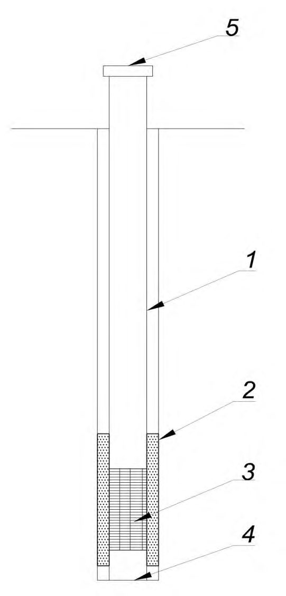
1 - фильтровая колонна; 2 - песчано-гравийная обсыпка; 3 - сетчатый фильтр на каркасе трубы; 4 - отстойник; 5 - крышка с запорным устройством
Рисунок 6.1 Типовая конструкция наблюдательной скважины
В составе программы определяют количество скважин и места их расположения, конструкцию скважин, периодичность циклов наблюдений за УПВ, необходимость контроля температуры воды в скважине и ее химического состава, продолжительность мониторинга с четким указанием условий его прекращения (завершение строительства, осушение грунтового массива постоянным дренажными устройствами).
СП 305.1325800.2017 системы водопонижения с целью контроля за отсутствием превышения восстановленного уровня над расчетным, что очень важно при возможности всплытия построенного сооружения.
СП 305.1325800.2017 сохранению работоспособности наблюдательных скважин, устранению возможных нештатных ситуаций.
6.7Температурные методы
7Результаты геотехнического мониторинга
7.1Анализ результатов проведения геотехнического мониторинга
СП 305.1325800.2017 основанием.
7.2Алгоритм действий в случае выявления возможности реализации аварийных ситуаций
При выявлении динамики изменения показаний, свидетельствующей о возможности реализации аварийной или предаварийной ситуации, следует:
- незамедлительно проинформировать представителей авторского и технического надзора и иных представителей, предусмотренных ГОСТ 31937-2011 (подраздел 6.8), о выявленных отклонениях контролируемых параметров от прогнозных значений или превышении предельных значений величин и необходимости оперативного принятия решения о приостановке строительных работ;
- увеличить частоту проведения измерений до момента установления причин наступления опасной ситуации, их устранения и восстановления прогнозной динамики
СП 305.1325800.2017 изменения измеряемых значений величин. При этом для локализации опасных явлений возможно увеличение количества точек или видов измерений;
- разработать рекомендации по комплексу первоочередных мероприятий, направленных на предотвращение развития предаварийной или аварийной ситуации на объекте строительства и прилегающей территории;
- установить причины выявленных опасных отклонений контролируемых параметров, в т. ч. с помощью проведения дополнительных инженерных изысканий;
- разработать рекомендации по обеспечению дальнейшей безопасности строительства и эксплуатационной надежности вновь возводимых (реконструируемых) объектов, эксплуатационной пригодности окружающей застройки.
8Геотехнический мониторинг в особых условиях
8.1Мониторинг уникальных зданий и сооружений
СП 305.1325800.2017
8.2Мониторинг в условиях плотной городской застройки
8.3Мониторинг при наблюдательном методе проектирования
- наличие участков, доступ к которым затруднен по техническим или иным причинам;
- неопределенности в механических характеристиках закрепленных массивов;
- сложный порядок проведения работ, определяющий усилия в создаваемых конструкциях;
- выбор технологических параметров при выполнении геотехнических или тоннельных работ;
- выбор технологии при компенсационном нагнетании или использовании геобарьеров.
СП 305.1325800.2017
8.3.4При применении наблюдательного метода в составе проектной документации разрабатывают проект мониторинга, в котором устанавливают:
- контролируемые параметры и характеристики;
- допустимый диапазон изменения контролируемых характеристик;
- программа контроля изменения выбранных характеристик;
- критерии перехода к определенным в проекте техническим решениям;
- план мероприятий и ведения мониторинга в случае достижения контролируемыми характеристиками допустимых пределов.
- разрушение отдельных фундаментов или несущих конструкций;
- разрушение грунтового основания или достижение первого предельного состояния в элементе грунтового основания;
- достижение недопустимых деформаций устраиваемой конструкции;
- достижение недопустимых деформаций конструкций существующих зданий или инженерных коммуникаций;
- потеря устойчивости склона или грунтового откоса;
- увеличение скорости смещения склона или откоса;
- возможность аварийных притоков грунтовых вод в котлован, которые способны вызвать затопление котлована или гидравлическое разрушение основания.
СП 305.1325800.2017
8.4Мониторинг при строительстве в условиях распространения органоминеральных и органических грунтов
8.5Мониторинг при строительстве в условиях распространения насыпных грунтов
СП 305.1325800.2017
- осадок за счет самоуплотнения существующих и вновь отсыпаемых насыпных грунтов, подстилающих их грунтов природного сложения от веса планировочных насыпей;
- осадок от фундаментов возводимых сооружений от нагрузок и других воздействий, в том числе на окружающей их территории;
- изменение основных характеристик насыпных грунтов;
- положения УПВ на различных этапах устройства планировочных насыпей, искусственных оснований, свайных фундаментов и в целом сооружений.
- возведение сооружений, особенно с новыми конструктивными схемами и решениями, относящиеся к уровням ответственности КС-3 (повышенный) и КС-2 (нормальный);
- грунтовые условия, относящиеся к первой и второй категории сложности, искусственных оснований и планировочной насыпи толщиной более 2 м и насыпных грунтов ниже подошвы фундаментов и ростверков более 2 м;
- расположения площадок на склонах, устойчивость которых за счет пригрузки грунтового массива от веса зданий и сооружений, планировочных насыпей или подрезки склонов снижается более чем на 10 %;
- устройство подземной части сооружений глубиной более 5 м с применением специальных ограждающих конструкций котлованов.
СП 305.1325800.2017 в) подземных инженерных коммуникаций, расположенных в зоне влияния нового строительства, по аналогии с таблицей Е.3 с учетом изменений приведенных выше к таблице Е.1.
8.6Мониторинг при строительстве в условиях распространения просадочных грунтов
- просадки грунтов и фундаментов;
- дополнительное сжатие подстилающих непросадочных грунтов от нагрузок, возникающих при застройке площадки с учетом планировочных насыпей, нагрузок от фундаментов и др.;
- горизонтальные перемещения грунтового массива и фундаментов;
- положение УПВ;
- изменение основных характеристик просадочных грунтов.
8.6.2При возведении и реконструкции зданий и сооружений, относящихся к уровням ответственности КС-3 (повышенный) и КС-2 (нормальный), в особенности с новыми конструктивными схемами и техническими решениями, на площадках с типом II грунтовых условий по просадочности при ssl,g ≥ 5 см дополнительно к требованиям СП 22.13330 необходимо организовать наблюдения за просадками грунтов и фундаментов, горизонтальными перемещениями (приложение Е).
СП 305.1325800.2017
8.7Мониторинг при строительстве в условиях распространения многолетнемерзлых грунтов
Таблица8.1 Основные контролируемые параметры при геотехническом мониторинге сооружений
| Контроли- руемый параметр | Устройство для наблюдения за контроли- руемым | Параметры устройств контроля | Принципы использования многолетнемерзлых грунтов в качестве основания сооружений | Принципы использования многолетнемерзлых грунтов в качестве основания сооружений | Принципы использования многолетнемерзлых грунтов в качестве основания сооружений |
|---|---|---|---|---|---|
| принцип I | принцип II | принцип II | |||
| параметром | Предварительное искусственное оттаивание грунтов | Допущение оттаивания грунтов в период эксплуатации сооружения | |||
| Температура грунта | Термометри- ческая скважина | Количество | Не менее2% общего числа фундаментов (свай, столбчатых фундаментов) | Допускается не предусматривать | Не менее 2 %общего числафундаментов |
| Расположение | У наружных фундаментов и фундаментов, расположенных посредине здания | - | У наружных рядов фундаментов, а также в центре и на расстоянии от центра, равном 0,25-0,4 ширины здания | ||
| Глубина заложения | Не менее глубины заложения фундаментов | - | На глубину сжимаемого слоя, но не более 20 м | ||
| Уровень подземных вод | Гидро- геологическая скважина | Количество | Не менее двух | Не менее двух | Не менее двух |
| Расположение | Одна внутри контура здания, одна снаружи | В контуре здания | В контуре здания | ||
| Глубина заложения | На глубине заложения фундаментов плюс 5 м, а в случае свайных фундаментов - на глубине заложения свай | На глубине заложения фундаментов плюс 5 м, а в случае свайных фундаментов - на глубине заложения свай | На глубине заложения фундаментов плюс 5 м, а в случае свайных фундаментов - на глубине заложения свай | ||
| Осадка фундамента | Геодезическая марка | Расположение | Устанавливают на угловых фундаментах, в средней части по осям здания по его наружному контуру, а также по обе стороны от | Устанавливают на угловых фундаментах, в средней части по осям здания по его наружному контуру, а также по обе стороны от | Устанавливают на угловых фундаментах, в средней части по осям здания по его наружному контуру, а также по обе стороны от |
Примечание - Температуру в контрольных термометрических скважинах измеряют по всей их глубине с интервалами: 0,5 м до глубины 5 м, 1 м - свыше 5 м до глубины 10 м и 2 м - свыше 10 м связками инерционных термометров или электротермометров в ручном или автоматическом режимах.
Таблица8.2 Периодичность проведения измерений контролируемых параметров при строительстве (реконструкции) сооружения
| Контролируемый параметр | Принципы использования многолетнемерзлых грунтов в качестве основания сооружения | Принципы использования многолетнемерзлых грунтов в качестве основания сооружения | Принципы использования многолетнемерзлых грунтов в качестве основания сооружения |
|---|---|---|---|
| принцип I | принцип II | принцип II | |
| Предварительное искусственное оттаивание грунтов | Допущение оттаивания грунтов в период эксплуатации сооружения | ||
| Температура грунта | Ежемесячно | Ежемесячно | Ежемесячно |
| Уровень подземных вод | Один раз в конце летнего периода | Ежемесячно | Один раз в конце летнего периода |
| Осадки фундаментов строящегося (реконструируемого) сооружения | Ежемесячно | Ежемесячно | Ежемесячно |
| Осадки фундаментов сооружения окружающей застройки | Один раз в квартал | Ежемесячно | Один раз в квартал |
8.8Мониторинг при строительстве на территориях, подверженных сейсмическим воздействиям
8.9Мониторинг при строительстве на территориях с распространением оползневых процессов
- плановых и вертикальных перемещений на поверхности оползня;
СП 305.1325800.2017
- деформаций грунтового массива по глубине.
8.10Мониторинг при строительстве на территориях с возможностью карстообразования
- используемые методы геотехнического мониторинга, состав которых следует назначать в соответствии с разделом 6;
- контролируемые параметры и характеристики;
- допустимый диапазон изменения контролируемых характеристик;
- комплекс контролирующих средств (марок, реперов, датчиков деформаций и измерительных приборов и др.);
- наблюдательную сеть точек установки измерительных устройств, учитывающую прогнозируемый характер, динамику развития карстовых процессов, а также особенности деформаций оснований, фундаментов и наземных конструкций, обусловленные такими процессами;
- необходимую частоту циклов карстомониторинга;
- план мероприятий в случае достижения контролируемыми характеристиками допустимых пределов.
8.11Мониторинг при строительстве на подтопленных территориях
СП 305.1325800.2017
8.12Мониторинг при строительстве на подрабатываемых территориях
Особенности данного вида мониторинга заключаются в том, что зона его выполнения изменяется в пространстве и во времени по мере развития фронта горных работ или продвижения забоя подземной выработки. Мониторинг на подрабатываемых территориях должен проводиться в процессе подработки и в начальный период после ее завершения, а при необходимости - и в процессе эксплуатации подземной выработки.
Требования данного подраздела не распространяются на мониторинг, выполняемый внутри подземной горной выработки, независимо от ее назначения.
- особенности подземной выработки (назначение, уровень ответственности и проектные решения, способ проходки и устройства конструкций и др.);
- краткая характеристика инженерно-геологических и гидрогеологических условий участка подработки, включая характеристики горных пород (грунтов), прогнозируемые изменения уровня подземных вод (при подработке с водопонижением), прогнозируемые значения сдвижений массива горных пород и оснований объектов окружающей застройки;
- контролируемые параметры подземной выработки, массива горных пород и объектов окружающей застройки;
- геологические разрезы по профильным линиям;
- планы наблюдательных сетей, а также геологические разрезы, выполняемые с нанесением на них проектируемых горных выработок и подземных сооружений, прогнозных границ зоны влияния подработки, объектов окружающей застройки, элементов наблюдательной сети (в т. ч. по профильным линиям).
Таблица 8.3 Контролируемые параметры, сроки, периодичность и методы работ по геотехническому мониторингу при строительстве на подрабатываемых территориях
| Контролируемые параметры, сроки, периодичность и методы | Массив горных пород | Объекты подрабатываемой застройки |
|---|---|---|
| Контролируемые параметры | Таблица Ж.1 приложения Ж | Таблицы Ж.2 и Ж.3 приложенияЖ |
| Сроки выполнения работ | До начала подработки и не менее 1 года после ее завершения | До начала подработки и не менее 1 года после ее завершения |
| Периодичность измерений | Не реже 1 раза в месяц | Не реже 1 раза в месяц |
| Методы | Принимаются в зависимости от вида контролируемых параметров, типа наблюдаемых объектов, требований к точности измерений | Принимаются в зависимости от вида контролируемых параметров, типа наблюдаемых объектов, требований к точности измерений |
Примечания
1 Сроки выполнения мониторинга необходимо продлевать при отсутствии стабилизации изменений контролируемых параметров.
2 Периодичность измерений контролируемых параметров необходимо увязывать с графиком выполнения горных работ и допускается корректировать (т. е. выполнять чаще, чем это указано в проекте мониторинга) при превышении значений контролируемых параметров ожидаемых значений (в т. ч. их изменений, превышающих ожидаемые тенденции) или выявлении прочих опасных отклонений, а также при расположении подрабатываемой территории в условиях плотной городской застройки.
- 3 При подработке с целью добычи полезных ископаемых в период опасных деформаций наблюдения следует проводить не реже 2 раз в месяц.
- 4 Для уникальных поверхностных сооружений мониторинг следует продолжать не менее 2 лет после завершения процесса подработки.
- 5 При превышении контролируемыми параметрами расчетных значений, их измерения необходимо выполнять не реже 3-4 раз в месяц.
- 6 После завершения подработки и при стабилизации изменений контролируемых параметров массива горных пород и окружающей застройки наблюдения допускается вести 1 раз в 3 месяца.
При наличии вибраций, которые могут возникнуть при проходке открытых горных выработок следует проводить измерение уровня колебаний оснований и конструкций объектов поверхностной застройки.
СП 305.1325800.2017 результаты оценки точности измерений, исполнительные схемы фактического расположений элементов наблюдательной сети; результаты первичных обследований и измерений; б) промежуточные отчеты, включающие результаты текущих обследований и измерений контролируемых параметров, выполненные этапы горных работ, анализ результатов измерений и их сопоставление с прогнозными и предельными (допустимыми) значениями и рекомендации о необходимых дополнительных мерах защиты (при необходимости); в) заключительный отчет, включающий окончательные результаты обследований и измерений контролируемых параметров, подтверждение их стабилизации, анализ результатов измерений и их сопоставление с прогнозными и предельными (допустимыми) значениями, последствия влияния на окружающую застройку, рекомендации по необходимым ремонтно-восстановительным работам и др.
9Отчетная документация по геотехническому мониторингу
АПриложение А. Средства измерений контролируемых параметров при геотехническом мониторинге
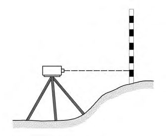
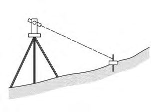
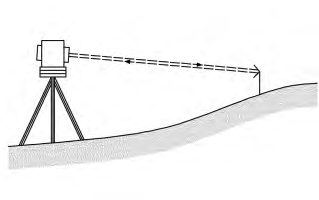
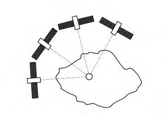
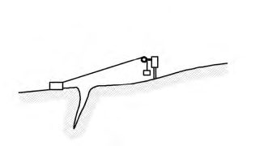
Таблица А.1 Средства измерений, контролируемые параметры, погрешности измерений
| Средства измерений | Измерительный диапазон | Погрешность измерения (для стандартных измерительных диапазонов) | |
|---|---|---|---|
| 1 Контроль смещений поверхности грунтового массива и конструкции | 1 Контроль смещений поверхности грунтового массива и конструкции | 1 Контроль смещений поверхности грунтового массива и конструкции | 1 Контроль смещений поверхности грунтового массива и конструкции |
| Нивелир | Определяется условиями измерений | 2 мм/0,5 мм (в зависимости от расположения измерительных точек) | |
| Электронный тахеометр (в т. ч. роботизированные) | Определяется условиями измерений | 1-5 мм (в зависимости от измеренного расстояния) | |
| Лазерный электронный дальномер | до 5 км | 0,5-3,0 мм (в зависимости от измеренного расстояния) | |
| Глобальная навигационная спутниковая система | Определяется условиями измерений | 20 мм (определение по четырем спутникам и приемником, расположенным в базовой точке) | |
| Поверхностный струнный трещиномер (струна из инварного сплава, натянутая с помощью груза) | 3 м (диапазон увеличивается при использовании струны большей длины, в зависимости от местных условий) | 10 мм (в зависимости от длины струны) | |
| Экстензометр для измерения конвергенции со струной из инвара | ±50 мм | ±0,05 мм |
| Средства измерений | Схема (эскиз) | Измерительный диапазон | Погрешность измерения (для стандартных измерительных диапазонов) |
|---|---|---|---|
| То же со стальной лентой (ленточный экстензометр) | 5-50 мм | ±50 мм | ±0,5 мм |
| Трещиномер одно- или двухосевой | 5-50 мм | 0,01-0,10 мм | |
| Трещиномер трехосевой | 5-50 мм | 0,02-0,20 мм | |
| Индикатор угла наклона с прецизионным уровнем | 10º | 0,1 мм/мили 20ʹʹ | |
| Индикатор угла наклона с маятниковым датчиком | 5º/10º/20º/30º | 0,5 %измерительного диапазона | |
| Прецизионный индикатор угла наклона с серво- акселерометром | 1º/15º/30º/ 45º/90º | 0,02 %измерительного диапазона | |
| Индикатор угла наклона с электроуровнем | 1º/10º/45º/60º | 0,5-1,0 %измерительного диапазона |
| Средства измерений | Измерительный диапазон | Погрешность измерения (для стандартных измерительных | |
|---|---|---|---|
| диапазонов) 2 Контроль смещения в грунтовом массиве или внутри конструкций | диапазонов) 2 Контроль смещения в грунтовом массиве или внутри конструкций | диапазонов) 2 Контроль смещения в грунтовом массиве или внутри конструкций | диапазонов) 2 Контроль смещения в грунтовом массиве или внутри конструкций |
| Инклинометр (с обсадной направляющей трубой) в скважине | 0º…30º 0º…90º | 2-3 мм/10 м | |
| Скважинный стержневой экстензометр | ±100 мм | ±0,2 мм | |
| Портативный ручной экстензометр (двухточечный) | ±20 мм/м | ±0,3 мм | |
| Портативный скважинный экстензометр (с одним зондом) | ±1000 мм | ±2 мм |
| Средства измерений | Измерительный диапазон | Погрешность измерения (для стандартных измерительных диапазонов) | |
|---|---|---|---|
| Гидравлический уровнемер | 100-200 мм | 1 мм | |
| Гидравлический уровнемер с датчиком давления | Без ограничений | 5-10 мм (0,1 %измерительного диапазона с датчиком давления) | |
| Оптико- волоконный экстензометр | 1 %активной длины волокна | 0,01 мм | |
| 3 Контроль уровня подземных вод и порового давления | 3 Контроль уровня подземных вод и порового давления | 3 Контроль уровня подземных вод и порового давления | 3 Контроль уровня подземных вод и порового давления |
| Портативный уровнемер для измерения в открытых гидронаблюдате- льных скважинах и колодцах | До 2 км | 10 мм | |
| Портативный пьезометр для измерения уровня воды в открытых гидронаблюдате- льных скважинах | До 2 км | 10 мм | |
| Пьезометр пневматический (закрытая измерительная система) | <3,5 МПа | 2 %измерительного диапазона | |
| Пьезометр, электрический (закрытая измерительная система) | <15 МПа | 0,1 %измерительного диапазона | |
| 4 Контроль усилия и давления | 4 Контроль усилия и давления | 4 Контроль усилия и давления | 4 Контроль усилия и давления |
| Средства измерений | Схема (эскиз) | Измерительный диапазон | Погрешность измерения (для стандартных измерительных диапазонов) |
|---|---|---|---|
| Датчик усилий в анкерах, распорных элементах, сваях | 100-5000 кН | 1 %измерительного диапазона | |
| Датчик давления замоноличи- ваемый | <35 МПа | 0,25 %измерительного диапазона | |
| Датчик давления для измерения напряжений на контакте «конструкция- грунтовый массив» или внутри грунта | <35 | МПа | 0,25 %измерительного диапазона |
| 5 Контроль уровня вибраций | 5 Контроль уровня вибраций | 5 Контроль уровня вибраций | 5 Контроль уровня вибраций |
| Геофон Акселерометр | Не более 0,1 v lim , где v lim -предельное значение измеряемого параметра |
СП 305.1325800.2017
БПриложение Б. Типы, область и правила применения скважинных инклинометров
Б.1 Скважинный инклинометр - аппаратно-программный комплекс для контроля поперечных смещений в грунтовом массиве или конструкции вдоль линейного профиля с помощью угловых измерений в специально оборудованных скважинах.
Б.2 Определение изменения угла наклона зонда инклинометра во времени проводят путем сравнения измеренных углов в текущем цикле с реперными («нулевыми») значениями. Также осуществляют расчет смещений измерительных точек относительно «нулевого» измерительного профиля.
Б.3 Комплекс состоит из измерительного зонда, оснащенного одним или двумя датчиками угла наклона, колонны направляющих труб, устройства для определения положения зонда в направляющей трубе и считывающего устройства с программным обеспечением. Измерительный зонд инклинометра (измерительный модуль -для стационарных инклинометров) состоит из водонепроницаемого стального корпуса с одним или двумя встроенными датчиками угла наклона. Зонд инклинометра оснащают устройствами для позиционирования его в скважине (как правилодве пары подпружиненных направляющих роликов, обеспечивающих перемещение зонда вдоль измерительного профиля скважины по направляющим пазам).
Б.4 В качестве реперной точки, относительно которой осуществляется расчет смещений измерительных точек в профиле, допускается использовать нижнюю измеряемую точку в скважине или верх направляющей трубы. Для измерения абсолютных перемещений необходимо периодически определять координаты верхней точки с применением геодезических методов контроля.
Б.5 Типы скважинных инклинометров, область их применения и точностные характеристики приведены в таблицах Б.1, Б.2 и Б.3 соответственно.
Таблица Б.1 Типы скважинных инклинометров
| Тип инклинометра | Подтип измерительного прибора | Принцип проведения измерений | Возможность автоматизации |
|---|---|---|---|
| Портативный | - вертикальный - горизонтальный | Зонд инклинометра перемещается от одной измерительной точки к другой (с одинаковым интервалом) по направляющим пазам внутри инклинометрической трубы. Измерения проводятся отдельными циклами | Не предусмотрена |
| Стационарный 1) | - вертикальный - горизонтальный | Измерительные зонды устанавливаются стационарно на различных отметках внутри инклинометрической трубы на весь период измерений | Предусмотрена |
| 1) Возможно применение комбинированных горизонтальных модулей. | 1) Возможно применение комбинированных горизонтальных модулей. | инклинометров, состоящих из | вертикальных и |
Таблица Б.2 Область применения скважинных инклинометров
| Инклинометр | Инклинометр | Инклинометр | Инклинометр | |
|---|---|---|---|---|
| Область применения | стационарный | стационарный | портативный | портативный |
| В | Г | В | Г | |
| Контроль горизонтальных деформаций по высоте ограждающих конструкций котлованов | + | - | + | - |
| Устойчивость зданий и сооружений, находящихся в зоне влияния строительства | + | + | + | - |
| Испытания свай (испытания горизонтальной нагрузкой) | + | ± | + | - |
| Контроль вертикальности скважин, ограждающих конструкций котлованов | ± | - | + | - |
| Контроль фактической кривизны скважин | ± | - | ± | ± |
| Устойчивость склонов (мониторинг оползневых процессов) | + | ± | + | - |
| Искусственные насыпи | + | ± | + | ± |
| Контроль выпучивания грунта | - | + | - | ± |
| Примечание - В настоящей таблице применены следующие обозначения: «В» - вертикальный инклинометр; «Г» - горизонтальный инклинометр; «+» - применение рекомендуется; | Примечание - В настоящей таблице применены следующие обозначения: «В» - вертикальный инклинометр; «Г» - горизонтальный инклинометр; «+» - применение рекомендуется; | Примечание - В настоящей таблице применены следующие обозначения: «В» - вертикальный инклинометр; «Г» - горизонтальный инклинометр; «+» - применение рекомендуется; | Примечание - В настоящей таблице применены следующие обозначения: «В» - вертикальный инклинометр; «Г» - горизонтальный инклинометр; «+» - применение рекомендуется; | Примечание - В настоящей таблице применены следующие обозначения: «В» - вертикальный инклинометр; «Г» - горизонтальный инклинометр; «+» - применение рекомендуется; |
рекомендуется;
Таблица Б.3 Точностные характеристики скважинных инклинометров
| Тип инклинометра | Параметр | Значение параметра | Значение параметра |
|---|---|---|---|
| Тип инклинометра | вертикальный инклинометр | горизонтальный инклинометр | |
| Портативный | Точность измерительного зонда | ± 0,05 %измерительного диапазона (± 0,26 мм/м для диапазона ± 30°) | ± 0,05 %измерительного диапазона (± 0,26 мм/м для диапазона ± 30°) |
| Портативный | Повторяемость результатов измерений профиля длиной 30 м (при неизменном положении инклинометрической скважины) | ± 2 мм | ± 10 мм |
| Стационарный | Повторяемость результатов измерений цепочки измерительных модулей стационарного инклинометра, измерительный диапазон ±10°, расстояние между модулями - 2 м (при неизменном положении инклинометрической скважины) | ± 2 мм | ± 2 мм |
| Портативный и стационарный | Разница в результатах измерений, выполненных с временным интервалом 24 ч (при одинаковых условиях измерения) | ± 0,1 мм/м | ± 0,1 мм/м |
Б.6 Портативный скважинный инклинометр - измерительный комплекс, состоящий из одноили двухосевого инклинометрического зонда, используемого для пошаговых измерений углов наклона зонда вдоль линии контроля (скважины).
Б.7 Одноосевой скважинный инклинометр, оснащенный одним измерительным датчиком угла наклона, предназначен для проведения измерений вдоль одной плоскости и его применение рекомендуется преимущественно для измерений в горизонтальных скважинах.
Б.8 Двухосевой скважинный инклинометр, измерительный зонд которого оснащен двумя датчиками угла наклона, расположенными под углом 90° относительно друг друга, предназначен для измерений углов по двум взаимно перпендикулярным плоскостям и его применение рекомендуется преимущественно для измерений в вертикальных скважинах.
Б.9 Вертикальный портативный скважинный инклинометр предназначен для измерения горизонтальных смещений вдоль вертикального профиля.
Б.10 Горизонтальный портативный инклинометр предназначен для измерения перемещений в вертикальном направлении (осадка или подъем вдоль горизонтальноориентированного профиля).
Б.11 Расстояние между двумя соседними измерительными точками, используемое при расчете профиля смещений, составляет измерительную базу. При проведении периодических измерений зонд портативного скважинного инклинометра перемещается с одинаковым шагом вдоль измерительного профиля по трубе, при этом шаг измерений должен совпадать с длиной зонда и измерительной базой (рисунок Б.1).
I - вид сверху на инклинометрическую скважину; II - вид сбоку; III - положение зонда инклинометра в момент R и F ; z - длина измерительного профиля; L - длина зонда; l - шаг измерений; n - количество измерений; R - начальное положение инклинометрической скважины («нулевое» измерение); F - положение инклинометрической скважины в момент измерений F ; 1 - недеформированный участок инклинометрической трубы; 2 - участок деформированной инклинометрической трубы; 3 - измерительный зонд инклинометра; 4 -участок деформаций грунтового массива; 5 - устойчивая зона грунтового массива; 6 -реперная точка (в данном случае за реперную точку принимается ось нижней пары
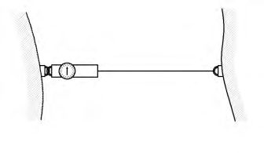
СП 305.1325800.2017 направляющих роликов инклинометрического зонда); 7 - приспособление для измерения положения зонда в скважине (стандартно металлические маркеры, расположенные с равным шагом на соединительном кабеле); Δα - изменение угла наклона измерительного зонда относительно «нулевого» измерения
Рисунок Б.1 -Принципиальная схема измерений с применением портативного скважинного инклинометра
Б.12 Для правильного позиционирования измерительного зонда вдоль профиля в скважине кабель инклинометра должен быть оснащен системой прочных стальных цилиндрических маркеров, расположенных с шагом, соответствующим длине зонда. При перемещении измерительного зонда от одной точки к другой маркер зажимается в специальном кабельном фиксаторе, устанавливаемом на верхний срез инклинометрической трубы.
Б.13 Для получения необходимой точности измерений с использованием портативных скважинных инклинометров необходимо обеспечить повторяемость определения положения зонда в отдельных измерительных циклах ± 5 мм.
Б.14 Стационарный инклинометр - измерительный комплекс, состоящий из одного или нескольких измерительных модулей, расположенных вдоль скважины на фиксированных отметках (при измерениях перемещения вдоль скважины не происходят) и объединенных в измерительную цепочку с помощью соединительных элементов (рисунок Б.2).
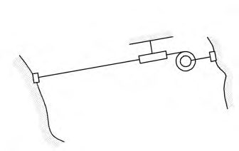
а) Стационарный инклинометр с измерительными модулями, оснащенными роликовыми направляющими, все модули соединены в одну цепочку б) Стационарный инклинометр с измерительными модулями, оснащенными роликовыми направляющими, модули не соединены в одну цепочку
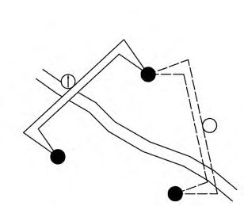
в) Стационарный инклинометр с измерительными модулями без направляющих роликов, модули не соединены в одну цепочку
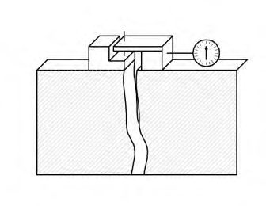
1 - верхняя подвеска измерительных модулей; 2 - блок роликовых направляющих; 3 -шарнирное соединение; 4 - направляющая инклинометрическая труба; 5 - жесткий соединительный элемент; 6 - измерительный модуль; 7 - длина измерительного модуля; 8 -измерительная база; 9 - промежуточная соединительная подвеска; 10 - распорное крепление измерительного модуля; 11 - материал-заполнитель
Рисунок Б.2 - Разновидности стационарных инклинометров
Б.15 Измерительные модули, соединенные в одну цепочку, должны обладать максимальной жесткостью конструкции. Изменение углов между соседними измерительными модулями должно происходить только в местах их сопряжения (шарнирное соединение). Соединительные элементы должны обеспечивать неизменное положение в скважине измерительных модулей на протяжении всего периода измерений.
Б.16 Длина измерительных модулей (включая соединительные элементы) в цепочке не должна превышать 2 м. Чем короче длина измерительных модулей, тем больше разрешающая способность измеренного профиля смещений.
Б.17 Для правильного позиционирования зонда инклинометра в измерительной скважине трубы круглого сечения с внутренней стороны должны иметь направляющие пазы, обеспечивающие перемещение по ним роликов зонда инклинометра (рисунок Б.3). Продольные внутренние направляющие пазы в количестве четырех штук должны быть расположены с шагом 90°, с тем чтобы измерения зондом выполнялись во взаимно
СП 305.1325800.2017 перпендикулярных плоскостях. Стандартный диапазон внутренних диаметров направляющих труб составляет 45-85 мм.
Б.18 Материал, из которого изготавливают направляющие трубы должен соответствовать следующим требованиям:
- нейтральный к окружающей среде (бетон, грунтовый массив, подземные воды);
- сохраняющий форму и прочность на протяжении всего периода измерений;
- достаточная эластичность при изгибе;
- устойчивость к механическим воздействиям в процессе установки.
Стандартным материалом для направляющих инклинометрических труб является АБСпластик (акрилонитрилбутадиенстирол).Также могут применяться трубы из ПВХ, металла и алюминия. Металлические и алюминиевые направляющие трубы подвержены химической (агрессивное воздействие подземных вод) и электрохимической (возникновение тока между геологическими слоями с различным электрическим потенциалом) коррозиям.
[Б.19 Закручивание пазов после установки трубы в скважину не должно превышать 0,25°/м. Соединение смежных отрезков инклинометрических труб должно обеспечивать сохранение профиля направляющих пазов.](http://drafts.bsigroup.com/Home/View/3671954?pos=3671954)
Б.20 Для компенсации возможных деформаций контролируемой среды вдоль линии контроля рекомендуется применение телескопических секций (рисунок Б.3).
Б.21 Диаметр скважины при бурении выбирают исходя из конкретных условий установки и гидрогеологических параметров. Диаметр скважины не должен превышать тройного диаметра направляющих инклинометрических труб.
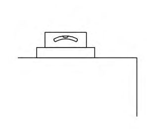
1 - точка, положение которой контролируется геодезическим методом; 2 - уровень поверхности земли; 3 - стенка скважины; 4 - телескопическая секция; 5 - раствор, заполняющий полость между стенкой скважины и инклинометром; 6 - реперная точка; 7 -нижняя заглушка; 8 - область массива, подверженная деформациям; 9 - стабильная область массива; 10 - пазы для инклинометра; 11 - направляющая труба; 12 - направление
Рисунок Б.3 Скважина, оснащенная направляющими трубами для инклинометров
Б.22 При мониторинге грунтовых и скальных массивов рекомендуется использовать скважины и направляющие трубы большого диаметра, что уменьшает риск их
СП 305.1325800.2017 преждевременного разрушения при деформации окружающего массива.
Б.23 При выборе диаметра труб и сечения скважины следует учитывать, что увеличение зазора между стенкой скважины и внешней поверхностью направляющей трубы уменьшает чувствительность измерительной системы к малым деформациям.
Б.24 Нижнюю часть скважины, по возможности, следует располагать в устойчивых грунтах, не подверженных деформациям, на величину не менее шести длин измерительного зонда.
Б.25 Непосредственно перед установкой направляющих инклинометрических труб скважину следует очистить или промыть с использованием воды или сжатого воздуха.
Б.26 Установку направляющих инклинометрических труб в скважины рекомендуется осуществлять таким образом, чтобы плоскость, образуемая двумя противоположно расположенными направляющими пазами, совпадала с главным направлением наблюдений. Для вертикальных скважин главное направление наблюдений совпадает с направлением возможных смещений контролируемой среды.
Б.27 Технология установки направляющих труб должна исключать их закручивание вокруг продольной оси. После установки всех труб в скважину попытки развернуть трубы не допускаются.
Б.28 При установке направляющих труб общей длиной более 50 м закручивание направляющих пазов вокруг продольной оси следует определять с использованием специализированной аппаратуры (зонды со встроенными гироскопами или магнитными компасами).
Б.29 При установке направляющих инклинометрических труб в неустойчивых обводненных грунтах их монтаж в скважины осуществляют под защитой бентонитового раствора либо временных обсадных труб, удерживающих стенки скважины от обрушения. После установки направляющих труб в скважину обсадные трубы должны быть извлечены.
СП 305.1325800.2017
Б.30 При установке пластиковых направляющих инклинометрических труб в скважину, заполненную буровым раствором, необходимо исключить их всплытие. Для этого направляющие трубы, при их погружении в скважину, следует наполнить водой либо утяжелить с помощью грузов, прикрепляемых к нижней секции труб. Не допускается установка труб в скважину путем приложения нагрузки к верху трубы - это может привести к изгибанию труб по длине скважины, что значительно снизит точность измерений.
Б.31 При установке и эксплуатации инклинометрических скважин в зимнее время допускается заполнение труб незамерзающей жидкостью, химически нейтральной к материалу направляющих труб и компонентам скважинного инклинометра.
Б.32 Для обеспечения передачи деформаций контролируемой среды к направляющей инклинометрической трубе зазор между стенкой скважины и внешней поверхностью трубы должен быть полностью заполнен специальным составом. Физико-механические свойства данного состава (после его твердения) должны максимально соответствовать свойствам окружающей контролируемой среды.
Б.33 Для заполнения зазоров рекомендуется использовать цементные, цементнобентонитовые водные растворы. Конкретный состав раствора определяют на основании имеющегося опыта и исходя из конкретных условий объекта. Добавление в смесь бентонита проводят с целью снижения седиментации готового раствора на протяжении времени его закачивания в скважину. Допускается использование золы уноса в качестве нейтрального заполнителя.
СП 305.1325800.2017
Б.34 В случае, если скважина заполнена буровым раствором, нагнетание цементного состава необходимопроводить с нижней точки скважины через подающий шланг (внутренним диаметром от 16 мм), прикрепленный к направляющим трубам. В нагнетаемый раствор необходимо добавлять пластифицирующие добавки.
Б.35 В отдельных случаях (при установке в карстовых, крупнообломочных скальных породах, грунтах с высокой водопроницаемостью) возможно использование обратной засыпки с применением гранулированных материалов.
Б.36 При проведении инклинометрических измерений для достижения необходимой точности перед осуществлением первого замера на скважине следует обрезать верх направляющей инклинометрической трубы на высоте 0,8 - 1,0 м от земной поверхности, при этом срез должен быть горизонтальным. После проведения первичных измерений на скважине с помощью инклинометра последующая обрезка направляющей трубы не допускается.
Б.37 При проведении измерений необходимо соблюдать правильную ориентацию измерительного зонда в пространстве относительно измерительных осей X и Y (рисунок Б.4).
Б.38 Обработка результатов инклинометрических измерений заключается в расчете и построении кумулятивных профилей вдоль осей Х и У (рисунок Б.5), а также плановых перемещений точек ( XY ) в контролируемых скважинах относительно нулевого измерения.
Построение кумулятивного профиля осуществляют путем расчета положения измерительных точек в скважине по формулам:
где 𝑀𝑥𝑖 , 𝑀𝑦𝑖 - смещение вдоль в i -ной измерительной точке осей Х и Y соответственно;
𝑀𝑥, 𝑀𝑦 - суммарные смещения всего профиля вдоль осей Х и Y соответственно;
𝑀𝑖 - вектор смещения в i -ной измерительной точке в осях XY ;
L - база измерений, α𝑥𝑖 , α 𝑦𝑖 - измеренный в i -ной измерительной точке зенитный угол отклонения зонда инклинометра от вертикали вдоль осей Х и Y соответственно.
Рисунок Б.4 - Направления измерительных осей зонда скважинного инклинометра
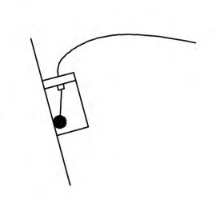
Рисунок Б.5 - Построение кумулятивного профиля скважины вдоль оси Х по данным инклинометрических измерений
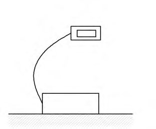
Б.39 В отчетную документацию рекомендуется включать результаты инклинометрических измерений в графическом и табличном виде. На графиках (рисунок Б.6) отображают профили поперечных смещений относительно нулевого цикла измерений вдоль двух взаимноперпендикулярных осей Х и У , а также график смещений в плане в осях ХY .
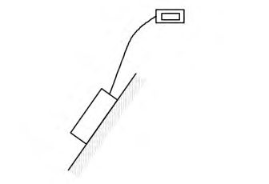
u - перемещения вдоль оси Х , мм; h - относительная вертикальная шкала глубины, м; 1 - результаты нулевого измерения (смещения вдоль профиля = 0); 2 - серия измерений, выполненных в процессе откопки котлована; 3 - временные уровни отметки дна котлована в процессе земляных работ в месте сопряжения со стеной в грунте; 4 - временные уровни отметки дна котлована в процессе земляных работ на удалении от стены в грунте; 5 -теоретическая кривая деформаций стены в грунте, полученная в результате математических расчетов (фаза откопки котлована 3/4 ); 6 - теоретическая кривая деформаций стены в грунте, полученная в результате математических расчетов (фаза откопки котлована на проектную глубину); 7 - уровень обвязочной балки; 8 - отметки распорных элементов; 9 -нижняя отметка стены в грунте; 10 - низ инклинометрической скважины
Рисунок Б.6 - Графическое представление результатов инклинометрических измерений (мониторинг деформаций «стены в грунте»)
ВПриложение В. Типы, область и правила применения экстензометров
В.1 При геотехническом мониторинге применяют стационарные, портативные и ленточные типы экстензометров. Технические характеристики экстензометров приведены в таблице В.1, а область их применения - в таблице В.2.
Таблица В.1 Технические характеристики экстензометров
| Параметр | Тип экстензометра | Тип экстензометра | Тип экстензометра | Тип экстензометра | Тип экстензометра | Тип экстензометра | Тип экстензометра | Тип экстензометра | Тип экстензометра |
|---|---|---|---|---|---|---|---|---|---|
| Параметр | стационарный | стационарный | стационарный | портативный | портативный | портативный | ленточный | ленточный | ленточный |
| Параметр | СЭ-СТ | СЭ-П | Э-З | ПЭ-1 | ПЭ-2-1 | ПЭ-2-2 | ЛЭ-1 | ЛЭ-2 | ЛЭ-3 |
| Стандартные измерительные длины | 30 (300) | 10 (300) | 30 (200) | 30 (200) | 30 (150) | 30 (150) | 15 (100) | 15 (30) | 15 (30) |
| Стандартный измерительный диапазон, мм | ±100 | ±250 | ±100 | ±1000 (±10% длины трубы) | ±20 на метр | ±10/±50 на метр | ±50 | ±20 | ±50 |
| Точность измерений (на стандартном диапазоне), мм | ±0,2 | ±2 | ±0,2 | ±2 | ±0,3 | ±0,05/ ±0,5 | ±0,05 | ±0,1 | ±0,5 |
| Возможность автоматизации | Да | Да | Да | Нет | Нет | Нет | Нет | Нет | Нет |
- Э-З - звеньевой скважинный экстензометр;
- ПЭ-1 - одноточечный портативный экстензометр;
- ПЭ-2-1 - двухточечный портативный механический экстензометр;
- ПЭ-2-2 - двухточечный портативный электрический экстензометр;
- ЛЭ-1 - леночныйэкстензометр с инварной струной (резьбовые анкерные болты);
- ЛЭ-2 - ленточный экстензометр со стальной лентой (резьбовые анкерные болты);
ЛЭ-3 - ленточный экстензометр со стальной лентой (анкерные болты с проушиной).
Таблица В.2 Область применения экстензометров
| Тип экстензометра | Тип экстензометра | Тип экстензометра | Тип экстензометра | Тип экстензометра | Тип экстензометра | Тип экстензометра | Тип экстензометра | Тип экстензометра | |
|---|---|---|---|---|---|---|---|---|---|
| Область применения | СЭ- СТ | СЭ- П | Э-З | ПЭ- 1 | ПЭ- 2-1 | ПЭ- 2-2 | ЛЭ- 1 | ЛЭ- 2 | ЛЭ- 3 |
| Фундаменты неглубокого заложения на грунтовом основании | + | - | + | - | + | ± | - | - | - |
| Фундаменты неглубокого заложения на скальном основании | + | - | + | - | ± | + | - | - | - |
| Свайные и свайно-ростверковые фунда- менты, включая свайные испытания | + | - | + | - | ± | + | - | - | - |
| Открытые земляные работы (котлованы и тоннели открытого способа строительства) вблизи существующих зданий и сооружений | ± | - | ± | + | ± | + | + | ± | ± |
| Пучение грунта | ± | - | ± | ± | + | + | - | - | - |
| Разуплотнение и карстообразование в грунтовом массиве | ± | ± | ± | + | + | ± | - | - | - |
| Мониторинг технического состояния конструкций зданий и сооружений | ± | - | ± | ± | ± | + | + | ± | - |
| Оползневые процессы | + | ± | + | ± | - | - | - | - | ± |
| В настоящей таблице применены следующие обозначения: «+» - применение рекомендуется; «±» - применение возможно; «-» - применение не рекомендуется. | В настоящей таблице применены следующие обозначения: «+» - применение рекомендуется; «±» - применение возможно; «-» - применение не рекомендуется. | В настоящей таблице применены следующие обозначения: «+» - применение рекомендуется; «±» - применение возможно; «-» - применение не рекомендуется. | В настоящей таблице применены следующие обозначения: «+» - применение рекомендуется; «±» - применение возможно; «-» - применение не рекомендуется. | В настоящей таблице применены следующие обозначения: «+» - применение рекомендуется; «±» - применение возможно; «-» - применение не рекомендуется. | В настоящей таблице применены следующие обозначения: «+» - применение рекомендуется; «±» - применение возможно; «-» - применение не рекомендуется. | В настоящей таблице применены следующие обозначения: «+» - применение рекомендуется; «±» - применение возможно; «-» - применение не рекомендуется. | В настоящей таблице применены следующие обозначения: «+» - применение рекомендуется; «±» - применение возможно; «-» - применение не рекомендуется. | В настоящей таблице применены следующие обозначения: «+» - применение рекомендуется; «±» - применение возможно; «-» - применение не рекомендуется. | В настоящей таблице применены следующие обозначения: «+» - применение рекомендуется; «±» - применение возможно; «-» - применение не рекомендуется. |
В.2 Стационарные скважинные экстензометры применяют стержневого, проволочного и звеньевого видов (рисунок В.1). Данные виды экстензометров могут выполняться с применением оптоволоконных измерительных систем.
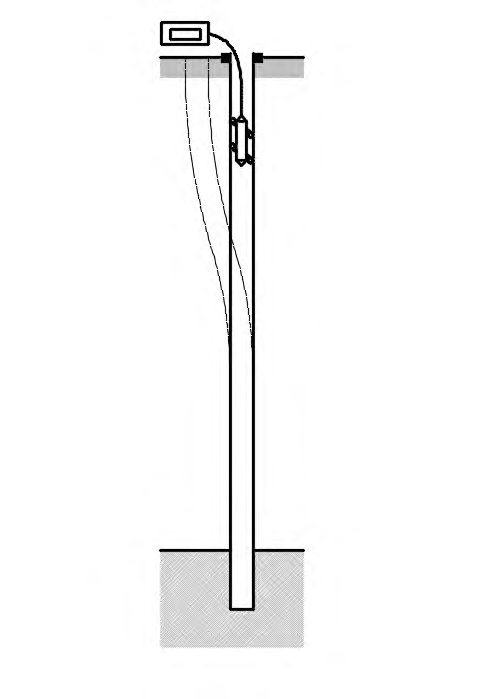
- а) Стержневой экстензометр
- б) Проволочный экстензометр в) Звеньевой экстензометр
1 - анкеры; 2 - соединительные стержни; 3 - реперный элемент; 4 - стенка скважины; 5 - считывающее устройство; 6 - устройство натяжения проволоки; 7 - устройство натяжения; 8 - звеньевые реперные элементы
Рисунок В.1 - Принципиальные схемы стационарных скважинных экстензометров
В.3 Портативные скважинные экстензометры применяют одно- или двухточечного видов (рисунок В.2).
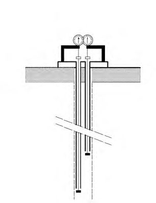
- а) Одноточечный экстензометр б) Двухточечный экстензометр
1 - направляющая труба доступа; 2 - магнитные кольца; 3 - измерительный зонд; 4 - измерительная лента с градуировкой; 5 относительно реперной точки у устья скважины); 6
7 - измерительный двухточечный зонд; 8 - направляющая штага (трос); 9 межскважинного пространства; 10 - стенка скважины
- измерительной устройство (снятие показаний - измерительный кольца; - заполнитель
Рисунок В.2 - Принципиальные схемы портативных экстензометров
- В.4 Ленточные экстензометры применяют с инварной струной или стальной лентой (рисунок В.3).
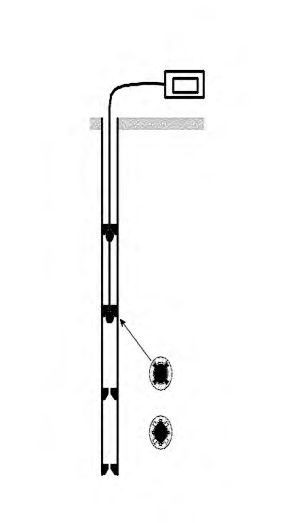
1 - анкерный болт (с резьбовым соединением или проушиной); 2 - измерительная стальная лента (или струна); 3 - устройство натяжения ленты (струны) и измерительное устройство; 4 - соединение (резьбовое либо проушина - крюк)
Рисунок В.3 - Принципиальная схема ленточного экстензометра
В.5 При применении стационарных, портативных и ленточных экстензометров в качестве измерительной точки принимают:
- середину анкера (стержневой, проволочный и звеньевой стационарные скважинные экстензометры);
- центр магнитного кольца (портативные скважинные экстензометры);
- центр резьбового соединения или проушины анкеров (ленточные экстензометры).
В.6 Точка, относительно которой проводят измерения расстояний, называется «реперной точкой» и считается условно неподвижной. Для измерений в абсолютной системе координат необходимо определить координаты реперной точки с использованием геодезических методов.
В.7 Для передачи перемещений исследуемой среды на измерительную точку необходимо обеспечить жесткое крепление специальных приспособлений (анкеров, магнитных колец и др.).
В.8 Длярегистрации перемещений измерительных точек стационарных экстензометров применяют: цифровые микрометры, индикаторы часового типа, первичные преобразователи линейных перемещений (струнные, электрические, оптоволоконные) с регистрирующей аппаратурой (портативные считывающие устройства либо стационарные автоматизированные системы регистрации).
В.9 Установку стационарных скважинных экстензометров выполняют с учетом следующих требований.
В.9.1 Соединительные элементы (стержни) должны быть защищены от заполнителя с использованием муфт.
В.9.2 Правильное положение стационарных стержневых скважинных экстензометров в скважине обеспечивается за счет применения специализированных сложных тампонажных растворов в сочетании с жестко зафиксированными измерительными точками (механический, гидравлический, пакер-анкер).
Осевая жесткость измерительной экстензометрической системы не должна превышать жесткость окружающей среды.
В.10 Установку портативных скважинных экстензометров выполняют с учетом следующих требований.
В.10.1 Для обеспечения передачи деформаций контролируемой среды к магнитным целям, установленным на направляющих трубах, зазор между стенкой скважины и внешней поверхностью трубы должен быть полностью заполнен специальным составом. Физикомеханические свойства данного состава (после его твердения) должны максимально соответствовать свойствам окружающей контролируемой среды.
В.10.2 Направляющая труба доступа не должна препятствовать перемещению вдоль нее магнитных колец.
В.10.3 При работе с одноточечным портативным экстензометром магнитные кольца допускается устанавливать вдоль трубы доступа на любом заданном расстоянии друг от друга.
В.10.4 При оснащении наблюдательной скважины для работы с двухточечным экстензометром магнитные кольца следует устанавливать с определенным шагом, соответствующим базе измерений и зависящим от измерительного диапазона зонда экстензометра.
В.10.5 Перед проведением первичных замеров положения магнитных целей раствор должен набрать необходимую прочность.
В.11 Установку ленточных экстензометров выполняют с учетом следующих требований.
В.11.1Анкерные болты должны быть выполнены из коррозионно-стойких прочных материалов. Конструкция анкеров должна позволять устанавливать на них геодезические визирные знаки (призмы или нивелирные рейки) с целью определения их абсолютного положения.
В.11.2 При установке в железобетонные конструкции анкерные болты монтируют в заранее пробуренные отверстия и фиксируют с использованием быстротвердеющих составов на основе цемента или эпоксидных смол. Допускается также использовать анкерные болты с механическим распорным механизмом.
В.11.3При установке на металлические поверхности анкерные болты могут быть
СП 305.1325800.2017 зафиксированы с использованием дуговой сварки.
В.11.4 Анкерные болты должны быть защищены от воздействия прямых солнечных лучей, агрессивной среды, строительных работ. Защита может быть обеспечена применением солнцезащитных козырьков, защитных корпусов.
В.12 При обработке результатов измерений с использованием стационарных экстензометров изменение положения измерительной точки i Δ Si в период между начальным и текущим измерениями вычисляют по формуле
где 𝑆𝑖т - измеренное значение положения измерительной точки 𝑖 в текущем цикле;
𝑆𝑖н - измеренное значение положения измерительной точки 𝑖 в нулевом цикле.
При этом ∆𝑆𝑖 идентично изменению растояния между измерительной точкой и устьем скважины
где 𝑤𝑖отн - смещение измерительной точки 𝑖 (вдоль направления измерений) относительно устья скважины.
Абсолютное смещение wi измерительной точки i вдоль направления измерений вычисляют по формуле
где 𝑤0 - абсолютное смещение устья скважины вдоль направления измерений, определяемое геодезическим методом.
В.13 При проведении измерений с использованием портативных скважинных одноточечных экстензометров вертикальное смещение wi т измерительной точки i в текущем измерительном цикле относительно «нулевого» измерения вычисляют по формуле
где 𝑑𝑖т - расстояние от измерительной точки до устья скважины в текущем цикле; 𝑑𝑖н - расстояние от измерительной точки до устья скважины в «нулевом» цикле; 𝑤н,т - вертикальное смещение отметки устья скважины относительно положения при «нулевом» цикле измерений (определяют геодезическими методами).
В.14 При проведении измерений с использованием портативных скважинных двухточечных экстензометров относительное смещение ∆𝑤𝑖 соседних измерительных точек 𝑖 и 𝑖 - 1 вычисляют по формуле
где 𝑙 𝑖т - расстояние между измерительными точками 𝑖 и 𝑖 - 1 в текущем цикле; 𝑙 𝑖н - расстояние между измерительными точками 𝑖 и 𝑖 - 1 в «нулевом» цикле.
Абсолютное смещение wi измерительной точки 𝑖 вдоль направления измерений вычисляют по формуле
В.15 При проведении измерений с использованием ленточных экстензометров изменение расстояния между измерительными точками Δ S вычисляют по формуле
где 𝑆т , 𝑆н - измеренные значения в текущем и «нулевом» цикле соответственно.
В случае возникновения температурных изменений в различных измерительных циклах при обработке результатов необходимо вводить температурную поправку
где 𝐾темп - коэффициент температурной поправки, вычисляемый по формуле
где αтемп - коэффициент линейного температурного расширения материала ленты (струны); 𝑙 - расстояние между измеряемыми точками;
∆𝑇 = 𝑇 т -𝑇н - разница в измеренной температуре между текущим и «нулевым» циклами.
ГПриложение Г. Типы, область и правила применения тензометрических датчиков
Г.1 Тензометрический датчик - устройство, позволяющее преобразовать величину деформации конструкции на локальном участке в электрический или оптический сигнал.
Г.2 Тензометрические датчики, применяемые при геотехническом мониторинге, применяют по типу чувствительного элемента и подразделяют на струнные, оптоволоконные и электрические (резистивные, емкостные, индуктивные). Основные технические характеристики тензометрических датчиков представлены в таблице Г.1.
Таблица Г.1 - Технические характеристики тензометрических датчиков
| Тип датчика | Измерительная база, мм | Измерительный диапазон, мкм/м | Разрешающая способность | Точность измерений |
|---|---|---|---|---|
| Электрический | 3-120 | ±2000 | 1 мкм/м | 1 %полной шкалы |
| Струнный | 50-250 | ±3000 | 1 мкм/м | 0,5 %полной шкалы |
| Оптоволоконный | 150-10000 | ±5000 | 0,5 мкм | 1 мкм |
Г.3 По способу монтажа тензометрические датчики подразделяют на закладные (замоноличиваемые), накладные и наклеиваемые. Область применения тензометрических датчиков приведена в таблице Г.2.
Таблица Г.2 - Область применения тензометрических датчиков
| Область применения | Тип тензометрического датчика по способу монтажа | Тип тензометрического датчика по способу монтажа | Тип тензометрического датчика по способу монтажа |
|---|---|---|---|
| закладной | накладной | наклеиваемый | |
| Контроль деформаций свай | + | + | + |
| Контроль деформации арматурного каркаса | - | + | + |
| Контроль деформации бетона | + | + | + |
| Контроль деформаций распорных элементов ограждающих конструкций котлованов | - | + | + |
| Контроль деформаций ограждающих конструкций котлованов | + | + | + |
| Контроль деформаций металлических конструкций | - | + | + |
| Примечание - В настоящей таблице применены следующие обозначения: «+» - применение рекомендуется; «-» - применение не рекомендуется. | Примечание - В настоящей таблице применены следующие обозначения: «+» - применение рекомендуется; «-» - применение не рекомендуется. | Примечание - В настоящей таблице применены следующие обозначения: «+» - применение рекомендуется; «-» - применение не рекомендуется. | Примечание - В настоящей таблице применены следующие обозначения: «+» - применение рекомендуется; «-» - применение не рекомендуется. |
- Г.4 При геотехническом мониторинге конструкций применяют два метода установки закладных тензометрических датчиков в конструкцию:
- датчик закрепляют на арматуру или стальной каркас, затем осуществляют бетонирование;
- датчик бетонируют в брикете с последующей его установкой в конструкцию.
При установке тензометрический датчик должен быть сориентирован вдоль направления, в котором проводят измерение деформации. Отклонение от указанного направления может привести к увеличению погрешности измерения. Для получения более точных результатов необходимо измерять деформацию по трем ортогональным осям (рисунок Г.1).
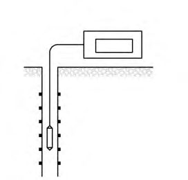
1 - арматурный каркас; 2 - закладные тензометрические датчики
Рисунок Г.1 - Схема ориентации закладных тензометрических датчиков
Г.5 При установке накладного тензометрического датчика на бетонную поверхность его крепление осуществляют посредством механических или химических анкеров (рисунок Г.2).
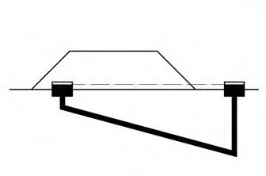
1 - анкер; 2 - поверхность бетона
Рисунок Г.2 - Установка накладного тензометрического датчика на поверхность бетона
На металлические конструкции накладной тензометрический датчик допускается устанавливать при помощи точечной или дуговой сварки (рисунки Г.3 - Г.5).
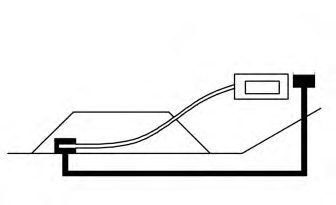
1 - ограждающие конструкции котлована; 2 - накладные тензометрические датчики; 3 -распорные элементы котлована
Рисунок Г.3 - Установка накладного тензометрического датчика на распорные элементы ограждения котлована
1 - арматурный каркас сваи; 2 - накладные тензометрические датчики Рисунок Г.4 - Установка накладного тензометрического датчика на арматурный каркас сваи
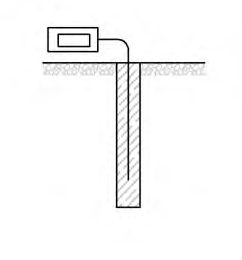
1 - накладные тензометрические датчики; 2 - арматурный каркас Рисунок Г.5 - Установка накладного тензометрического датчика на арматурный каркас железобетонной конструкции
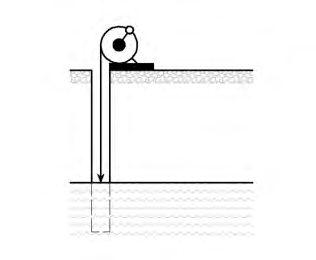
Г.6 Перед установкой наклеиваемых тензометрических датчиков необходимо выровнять, отшлифовать и обезжирить участок поверхности объекта контроля. После чего провести наклеивание тензометрических датчиков на поверхность. Клеевой состав и шероховатость подготовленной поверхности подбирают согласно рекомендациям производителя тензометрических датчиков.
Г.7 Данные, полученные с тензометрических датчиков представлены в относительных единицах микрострейнах ( με ), где относительная деформация есть отношение изменения длины датчика к единице длины (мкм/м).
Для расчета измеренных относительных деформаций струнных датчиков применяют следующую формулу
где 𝑓 - измеренная частота собственных колебаний струны датчика, Гц;
𝐺 - калибровочный коэффициент, определяемый для каждого датчика индивидуально.
Изменение относительных деформаций Δμε вычисляют по формуле
𝐿т - результаты измерений относительных деформаций датчика в текущем цикле;
𝐿н - результаты измерений относительных деформаций датчик в «нулевом» цикле.
Г.8 Для электрических датчиков измеренное значение относительной деформации L με, (мкм/м), вычисляют по формуле
где 𝐿эл - измеренное значение в электрических единицах;
𝑆 - коэффициент чувствительности датчика.
Г.9 В случае возникновения температурных изменений в различных измерительных циклах измеренную разницу относительных деформаций с учетом температурной поправки ∆μεтемп вычисляют по формуле
где 𝑇д - коэффициент температурного расширения датчика, με/℃ ;
𝑇с - коэффициент температурного расширения контролируемой среды, με/℃ ; 𝑡 т - измеренная температура в текущем цикле; 𝑡 н - измеренная температура в «нулевом» цикле.
ДПриложение Д. Типы, основные характеристики и область применения датчиков для измерения давления и усилий
Д.1 Типы и основные параметры применяемых при геотехническом мониторинге датчиков для измерения давления и усилий приведены в таблице Д.1, область их применения
- в таблице Д.2 Таблица Д.1 -
Основные характеристики датчиков давления и усилий
| Тип датчика | Стандартный измерительный диапазон | Точность измерений | Возможность автоматизации |
|---|---|---|---|
| Датчик общего давления в грунте, на контакте конструкция - грунтовый массив, в конструкции | Датчик общего давления в грунте, на контакте конструкция - грунтовый массив, в конструкции | Датчик общего давления в грунте, на контакте конструкция - грунтовый массив, в конструкции | Датчик общего давления в грунте, на контакте конструкция - грунтовый массив, в конструкции |
| Струнный | 0 - 35000 кПа | ±0,1 %полного диапазона | Имеется |
| Оптоволоконный | 0 - 20000 кПа | ±0,25 %полного диапазона | Имеется |
| Электрический | 0 - 20000 кПа | ±0,25 %полного диапазона | Имеется |
| Датчик порового давления в грунте (пьезометр) | Датчик порового давления в грунте (пьезометр) | Датчик порового давления в грунте (пьезометр) | Датчик порового давления в грунте (пьезометр) |
| Струнный | 0 - 15000 кПа | ±0,1 %полного диапазона | Имеется |
| Оптоволоконный | 0 - 7000 кПа | ±0,25 %полного диапазона | Имеется |
| Электрический | 0 - 5000 кПа | ±0,1 %полного диапазона | Имеется |
| Пневматический | 30 - 3500 кПа | ±2 %полного диапазона | Отсутствует |
| Комбинированный задавливаемый датчик общего и порового давления в грунте | Комбинированный задавливаемый датчик общего и порового давления в грунте | Комбинированный задавливаемый датчик общего и порового давления в грунте | Комбинированный задавливаемый датчик общего и порового давления в грунте |
| Струнный | 0 -5000 кПа | ±0,1 %полного диапазона | Имеется |
| Электрический | 0 - 5000 кПа | ±0,1 %полного диапазона | Имеется |
| Датчик усилий в анкерных креплениях, сваях, распорных элементах котлованов | Датчик усилий в анкерных креплениях, сваях, распорных элементах котлованов | Датчик усилий в анкерных креплениях, сваях, распорных элементах котлованов | Датчик усилий в анкерных креплениях, сваях, распорных элементах котлованов |
| Струнный | 0 -5000 кН | ±1,0 %полного диапазона | Имеется |
| Электрический | 0 -5000 кН | ±1,0 %полного диапазона | Имеется |
| Гидравлический | 0 -2500 кН | ±1,5 %полного диапазона | Отсутствует |
Таблица Д.2 Область применения датчиков давления и усилий
| Область применения | Датчики общего давления | Датчики общего давления | Датчики общего давления | Датчики порового давления (пьезометр) | Датчики порового давления (пьезометр) | Датчики усилий | Датчики усилий | Датчики усилий |
|---|---|---|---|---|---|---|---|---|
| Область применения | ДДГ | ДДГК | ДДК | ДПД | ДПДЗ | ДУА | ДУР | ДУС |
| Измерение общего давления в грунтовом массиве | + | - | - | - | ± | - | - | - |
| Измерение общего давления в насыпных грунтах | + | - | - | - | ± | - | - | - |
| Измерение порового давления и пьезометрического уровня подземных вод в грунтовом массиве | - | - | - | + | + | - | - | - |
| Измерение общего давления в железобетонных конструкциях | - | - | + | - | - | - | - | - |
| Измерение общего давления на контакте конструкция - грунтовый массив | - | + | - | - | - | - | - | - |
| Измерение усилий в анкерных элементах | - | - | - | - | - | + | - | - |
| Измерение усилий в распорных элементах котлованов | - | - | - | - | - | - | + | ± |
| Измерение усилий в сваях | - | - | - | - | - | - | - | + |
| Примечание - В настоящей таблице применены следующие обозначения: «+» - применение рекомендуется; «±» - применение возможно; «-» - применение не рекомендуется; ДДГ - датчик давления в грунте; ДДГК - датчик давления на контакте грунт-конструкция; ДДК - датчик давления в конструкциях; ДПД - датчик порового давления; ДПДЗ - задавливаемый датчик порового/общего давления; ДУА - датчик усилий анкерный; ДУР - датчик усилий в распорных элементах котлованов; | Примечание - В настоящей таблице применены следующие обозначения: «+» - применение рекомендуется; «±» - применение возможно; «-» - применение не рекомендуется; ДДГ - датчик давления в грунте; ДДГК - датчик давления на контакте грунт-конструкция; ДДК - датчик давления в конструкциях; ДПД - датчик порового давления; ДПДЗ - задавливаемый датчик порового/общего давления; ДУА - датчик усилий анкерный; ДУР - датчик усилий в распорных элементах котлованов; | Примечание - В настоящей таблице применены следующие обозначения: «+» - применение рекомендуется; «±» - применение возможно; «-» - применение не рекомендуется; ДДГ - датчик давления в грунте; ДДГК - датчик давления на контакте грунт-конструкция; ДДК - датчик давления в конструкциях; ДПД - датчик порового давления; ДПДЗ - задавливаемый датчик порового/общего давления; ДУА - датчик усилий анкерный; ДУР - датчик усилий в распорных элементах котлованов; | Примечание - В настоящей таблице применены следующие обозначения: «+» - применение рекомендуется; «±» - применение возможно; «-» - применение не рекомендуется; ДДГ - датчик давления в грунте; ДДГК - датчик давления на контакте грунт-конструкция; ДДК - датчик давления в конструкциях; ДПД - датчик порового давления; ДПДЗ - задавливаемый датчик порового/общего давления; ДУА - датчик усилий анкерный; ДУР - датчик усилий в распорных элементах котлованов; | Примечание - В настоящей таблице применены следующие обозначения: «+» - применение рекомендуется; «±» - применение возможно; «-» - применение не рекомендуется; ДДГ - датчик давления в грунте; ДДГК - датчик давления на контакте грунт-конструкция; ДДК - датчик давления в конструкциях; ДПД - датчик порового давления; ДПДЗ - задавливаемый датчик порового/общего давления; ДУА - датчик усилий анкерный; ДУР - датчик усилий в распорных элементах котлованов; | Примечание - В настоящей таблице применены следующие обозначения: «+» - применение рекомендуется; «±» - применение возможно; «-» - применение не рекомендуется; ДДГ - датчик давления в грунте; ДДГК - датчик давления на контакте грунт-конструкция; ДДК - датчик давления в конструкциях; ДПД - датчик порового давления; ДПДЗ - задавливаемый датчик порового/общего давления; ДУА - датчик усилий анкерный; ДУР - датчик усилий в распорных элементах котлованов; | Примечание - В настоящей таблице применены следующие обозначения: «+» - применение рекомендуется; «±» - применение возможно; «-» - применение не рекомендуется; ДДГ - датчик давления в грунте; ДДГК - датчик давления на контакте грунт-конструкция; ДДК - датчик давления в конструкциях; ДПД - датчик порового давления; ДПДЗ - задавливаемый датчик порового/общего давления; ДУА - датчик усилий анкерный; ДУР - датчик усилий в распорных элементах котлованов; | Примечание - В настоящей таблице применены следующие обозначения: «+» - применение рекомендуется; «±» - применение возможно; «-» - применение не рекомендуется; ДДГ - датчик давления в грунте; ДДГК - датчик давления на контакте грунт-конструкция; ДДК - датчик давления в конструкциях; ДПД - датчик порового давления; ДПДЗ - задавливаемый датчик порового/общего давления; ДУА - датчик усилий анкерный; ДУР - датчик усилий в распорных элементах котлованов; | Примечание - В настоящей таблице применены следующие обозначения: «+» - применение рекомендуется; «±» - применение возможно; «-» - применение не рекомендуется; ДДГ - датчик давления в грунте; ДДГК - датчик давления на контакте грунт-конструкция; ДДК - датчик давления в конструкциях; ДПД - датчик порового давления; ДПДЗ - задавливаемый датчик порового/общего давления; ДУА - датчик усилий анкерный; ДУР - датчик усилий в распорных элементах котлованов; |
ЕПриложение Е. Контролируемые параметры при геотехническом мониторинге в условиях распространения просадочных грунтов
Е.1 В таблицах Е.1 - Е.3 знак «+» означает контролируемые параметры, которые необходимо фиксировать в процессе геотехнического мониторинга, знак «-» означает параметры, которые не требуется фиксировать при выполнении геотехнического мониторинга.
Е.2 При геотехническом мониторинге уникальных зданий и сооружений в особо сложных грунтовых условиях допускается по специальному заданию дополнительно проводить фиксацию контролируемых параметров, не указанных в таблицах Е.1 - Е.3.
Таблица Е.1 -Контролируемые параметры при геотехническом мониторинге оснований, фундаментов и конструкций вновь возводимых сооружений, а также сооружений окружающей застройки
| Контролируемые параметры | Расчетная суммарная просадка 𝑠 sl.g , см, и дополнительная осадка s ul , см | Расчетная суммарная просадка 𝑠 sl.g , см, и дополнительная осадка s ul , см | Расчетная суммарная просадка 𝑠 sl.g , см, и дополнительная осадка s ul , см | Расчетная суммарная просадка 𝑠 sl.g , см, и дополнительная осадка s ul , см | Расчетная суммарная просадка 𝑠 sl.g , см, и дополнительная осадка s ul , см | Расчетная суммарная просадка 𝑠 sl.g , см, и дополнительная осадка s ul , см | Расчетная суммарная просадка 𝑠 sl.g , см, и дополнительная осадка s ul , см |
|---|---|---|---|---|---|---|---|
| Контролируемые параметры | 5 - 10 | 5 - 10 | 10 - 30 | 10 - 30 | 10 - 30 | >30 | >30 |
| Контролируемые параметры | Просадочная толща H sl , м | Просадочная толща H sl , м | Просадочная толща H sl , м | Просадочная толща H sl , м | Просадочная толща H sl , м | Просадочная толща H sl , м | Просадочная толща H sl , м |
| Контролируемые параметры | <10 | 10 - 15 | 10 - 15 | 15 - 20 | >20 | 15 - 20 | >20 |
| Вновь возводимые сооружения | Вновь возводимые сооружения | Вновь возводимые сооружения | Вновь возводимые сооружения | Вновь возводимые сооружения | Вновь возводимые сооружения | Вновь возводимые сооружения | Вновь возводимые сооружения |
| Осадки, просадки фундаментов и грунтов их относи- тельные разности | + | + | + | + | + | + | + |
| Крен | + | + | + | + | + | + | + |
| Послойные осад- ки грунтов осно- вания | - | - | - | - | + 1) | + 1) | + 1) |
| Напряжения в толще и под пятой сваи | - | - | + 2) | + 2) | + 2) | + 1) | + 1) |
| Уровень подзем- ных вод | - | - | + | + | + | + | + |
| Изменение влаж- ности грунта по глубине | - | - | + | + | + | + | + |
| Существующие сооружения окружающей застройки | Существующие сооружения окружающей застройки | Существующие сооружения окружающей застройки | Существующие сооружения окружающей застройки | Существующие сооружения окружающей застройки | Существующие сооружения окружающей застройки | Существующие сооружения окружающей застройки | Существующие сооружения окружающей застройки |
| Дополнительные осадки и просадки фундаментов окру- жающих зданий | + | + | + | + | + | + | + |
| Крены | + | + | + | + | + | + | + |
| Горизонтальные перемещения по- верхностных марок | + | + | + | + | + | + | + |
| Ширина раскры- тия существующих трещин и появле- ние новых | + | + | + | + | + | + | + |
Таблица Е.2 -Контролируемые параметры при геотехническом мониторинге: конструкций ограждения котлована; грунтового массива, окружающего вновь возводимые и реконструируемые сооружения; подземных инженерных коммуникаций, расположенных в зоне влияния нового строительства
| Контролируемые параметры | Глубина котлована Н к , м | Глубина котлована Н к , м | Глубина котлована Н к , м | Глубина котлована Н к , м | Глубина котлована Н к , м | Глубина котлована Н к , м |
|---|---|---|---|---|---|---|
| Контролируемые параметры | 5 ≤ Н к <10 | 5 ≤ Н к <10 | 5 ≤ Н к <10 | Н к >10 дополнительная осадка , см | Н к >10 дополнительная осадка , см | Н к >10 дополнительная осадка , см |
| Контролируемые параметры | Расчетная < 0,1 | просадка 0,1 - 0,3 | 𝑠 sl.g , см > 0,3 | < 0,1 | 0,1 - 0,3 | > 0,3 |
| Горизонтальные перемещения | + 1) | + 1) | + 1) | + 1) | + 1) | + |
| Горизонтальные перемещения ограждения по высоте | - | - | + 1) | + 1) | + 1) | + 1) |
| Осадки и просадки верха ограждения | - | + 1) | + 1) | - | - | + 1) |
| Напряжение в стальных распорках анкерах | + 1) | + 1) | + 1) | + 1) | + 1) | + 1) |
| Осадки и просадки поверхностных марок | + 1), 2) | + 1), 2) | + 1), 2) | + 1), 2) | + 1), 2) | + 1), 2) |
| Послойные осадки и просадки грунта | - | - | + 1), 2) | - | + 1), 2) | + 1), 2) |
| Горизонтальные перемещения поверхностных марок | + 2) | + 1), 2) | + 1), 2), 3) | + 2) | + 1), 2) | + 1), 2), 3) |
| Послойные горизонтальные перемещения по глубине | - | + 1), 2) | + 1), 2) | - | + 1), 2) | + 1), 2) |
| Уровень подземных вод | + 1), 2) | + 1), 2) | + 1), 2) | + 1), 2) | + 1), 2) | + 1), 2) |
| Изменение влажности по глубине | - | + 1), 2) | + 1), 2) | + 1), 2) | + 1), 2) | + 1), 2) |
| Измерение вибраций | + 1), 2), 3) | + 1), 2), 3) | + 1), 2), 3) | + 1), 2), 3) | + 1), 2), 3) | + 1), 2), 3) |
| Осадки и просадки люков коммуникаций | + 3) | + 3) | + 3) | + 3) | + 3) | + 3) |
| Осадки и просадки обделок проходных | + 3) | + 3) | + 3) | + 3) | + 3) | + 3) |
| каналов и |
|---|
| коллекторов |
1) 2) 3) Выполняют при геотехническом мониторинге соответственно: конструкции ограждения котлована; грунтового массива, окружающего вновь возводимого здания и сооружения или при реконструкции существующих объектов; подземных инженерных коммуникаций, расположенных в зоне влияния нового строительства.
Таблица Е.3 -Контролируемые параметры при геотехническом мониторинге подземных инженерных коммуникаций, расположенных в зоне влияния нового строительства
| Контролируемые параметры | Расчетная просадка 𝑠 sl.g , см | Расчетная просадка 𝑠 sl.g , см |
|---|---|---|
| Контролируемые параметры | 10 - 30 | > 30 |
| Просадки люков | + | + |
| Просадки конструкций проходных или полупроходных каналов (коллекторов) | + | + |
| Горизонтальные перемещения люков | - | + |
| Горизонтальные перемещения конструкций каналов (коллекторов) | - | + |
| Вибрациилюков, конструкций, каналов и коллекторов | + 1) | + 1) |
| 1) Выполняют по специальному заданию. | 1) Выполняют по специальному заданию. | 1) Выполняют по специальному заданию. |
ЖПриложение Ж. Контролируемые параметры при геотехническом мониторинге на подрабатываемых территориях
Ж.1 В таблицах Ж.1-Ж.3 знак «+» обозначает контролируемые параметры, которые необходимо фиксировать в процессе мониторинга, знак « -» обозначает параметры, которые не требуется фиксировать при выполнении мониторинга.
Ж.2 При проходке и строительстве уникальных подземных сооружений, а также при мониторинге уникальных подрабатываемых сооружений по специальному заданию допускается дополнительно проводить фиксацию контролируемых параметров, не указанных в таблицах Ж.1-Ж.3.
Таблица Ж.1 Контролируемые параметры при мониторинге массива горных пород, окружающего выработку
| Контролируемые параметры | Массив горных пород |
|---|---|
| Вертикальные перемещения поверхности грунта | + |
| Горизонтальные перемещения поверхности грунта | + |
| Деформации поверхности грунта по профильным линиям | + |
| Уровень подземных вод | + 1) |
| Вертикальные перемещения массива грунта по глубине | + 2) |
| Горизонтальные перемещения массива грунта по глубине | + 2) |
| Геометрические параметры сосредоточенных деформаций земной поверхности (трещин, уступов) | + 3) |
ТаблицаЖ.2 -Контролируемые параметры при мониторинге сооружений поверхностной застройки (кроме подземных инженерных коммуникаций), расположенных в зоне влияния подработки
| Контролируемые параметры | Здания и сооружения окружающей застройки |
|---|---|
| Дополнительные осадки фундаментов и их относительная разность | + |
| Ширина раскрытия и глубина образования трещин | + |
| Дополнительный крен | + 1) |
| Горизонтальные перемещения конструкций и фундаментов | + 2) |
| Измерение вибраций | + 3) |
Таблица Ж.3 Контролируемые параметры при мониторинге подземных и надземных инженерных коммуникаций, расположенных в зоне влияния подработки
| Прокладка инженерных коммуникаций | Прокладка инженерных коммуникаций | Прокладка инженерных коммуникаций | Прокладка инженерных коммуникаций | |
|---|---|---|---|---|
| ниже поверхности земли | ниже поверхности земли | ниже поверхности земли | на или над поверхностью земли (байпас и др.) | |
| Контролируемые параметры | в проходных коллекторах, тоннелях или каналах | в грунте или непроходных защитных конструкциях 7) , при глубине заложения | в грунте или непроходных защитных конструкциях 7) , при глубине заложения | |
| H пк ≤ 2 | H пк > 2 | |||
| Осадки обечаек люков или других выступающих из земли (над землей) элементов конструкций камер и колодцев | + | + | + | - |
| Горизонтальные перемещения обечаек люков или других выступающих из земли (над землей) элементов конструкций камер и колодцев | + 1) | + 1) | + 1) | - |
| Осадки дна лотков колодцев самотечных водонесущих коммуникаций | - | + 2) | + 2) | - |
| Осадки конструкций обделок проходных коллекторов, тоннелей или каналов | + | - | - | - |
| Горизонтальные перемещения конструкций обделок проходных коллекторов, тоннелей или каналов | + 1) | - | - | - |
| Осадки фундаментов (конструкций) трубопроводов | - | + 3) | - | + |
| Горизонтальные перемещения фундаментов (конструкций) трубопроводов | - | + 1), 3) | - | + 1) |
|---|---|---|---|---|
| Осадки массива грунта вблизи коммуникаций | - | - | + 4) | - |
| Горизонтальные перемещения массива грунта вблизи коммуникации | - | - | + 1), 4) | - |
| Уровень подземных вод вблизи водонесущих коммуникации | - | + | + | - |
| Температура и химический состав подземных вод (грунта) вблизи коммуникации | - | + 2) | + 2) | - |
| Температура поверхности земли вдоль трасс «горячих» трубопроводов с помощью тепловизоров | - | + 2) | + 2) | - |
| Продольные осевые (кольцевые) напряжения в стенках трубопроводов | + 2), 5) | + 2), 5) | - | + 2), 5) |
| Перемещения и раскрытие стыковых соединений секционных трубопроводов | + 2) | - | - | + 2) |
| Деформации стенок проходных коллекторов (тоннелей, каналов) и трубопроводов в поперечном сечении | + 2), 6) | - | - | + 2), 6) |
| Ширина раскрытия трещин в стенках (обделке) проходных коллекторов, тоннелей или каналов, трубопроводов | + | + 2) | - | + 2) |
| Параметры колебаний трубопровода (грунта) при вибрациях | + 2) | + 2) | + 2) | + 2) |
1) Выполняют при L /( Hп -Hс ) ≤ 0,5, где L - расстояние в свету между строящимся подземным сооружением и объектом окружающей застройки, Hп и Hс глубины заложения устраиваемой выработки и объекта окружающей застройки.
3) Марки устанавливают на конструкциях предварительно отшурфованных коммуникаций.
2) Выполняют по специальному заданию.
4) Грунтовые марки устанавливают на отметке заложения коммуникации, с двух сторон от нее.
6) Выполняют для коммуникаций в грунте при возникновении нагрузок и воздействий, направленных на коммуникации.
5) Выполняют с использованием тензометров, индикаторов часового типа и др.
7) Футляры, обойма, непроходные коллекторы (тоннели, микротоннели, каналы).
Примечание - В процессе геотехнического мониторинга коммуникаций необходимо проводить периодические визуальные обследования состояния поверхности грунта (просадки, наличие пара и др.) вдоль трасс коммуникаций и конструкций обделок проходных коллекторов (тоннелей, каналов), а также колодцев и камер (по специальному заданию) коммуникаций непроходного типа.
Библиография
- [1] Федеральный закон от 29 декабря 2004 г. № 190-ФЗ «Градостроительный кодекс Российской Федерации»
- [2] Федеральный закон от 30 декабря 2009 г. № 384-ФЗ «Технический регламент о безопасности зданий и сооружений»
- [3] СН 2.2.4/2.1.8.566-96 Производственная вибрация, вибрация в помещениях жилых и общественных зданий
- [4] СП 11-105-97 Инженерно-геологические изыскания для строительства